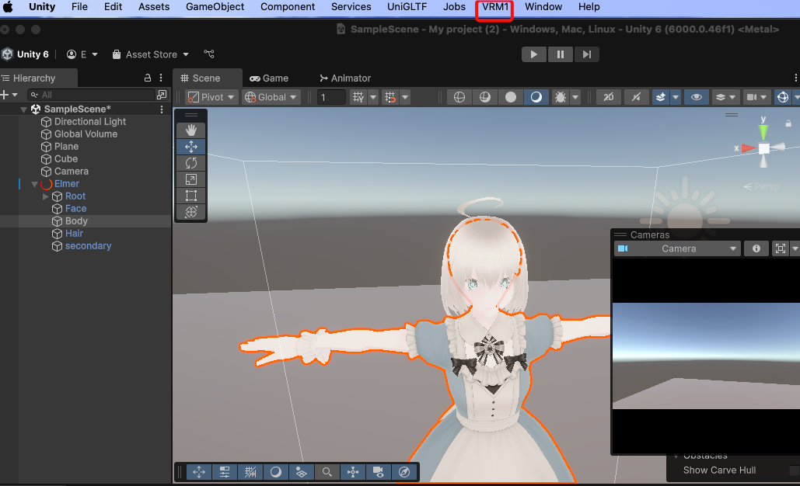
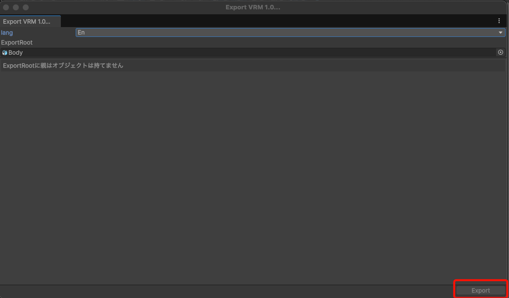

Desktop Homunculus MOD Development Manual
Welcome to the comprehensive guide for developing MODs (modifications) for Desktop Homunculus! This manual will help you create custom extensions, interactive interfaces, and automated behaviors for your desktop companion.
About Desktop Homunculus
Desktop Homunculus is a cross-platform desktop mascot application that brings 3D VRM characters to life on your desktop. These characters can interact with you through AI-powered conversations, respond to user input, and provide a customizable digital companion experience.
What You'll Learn
This manual covers everything you need to know to extend Desktop Homunculus with your own MODs:
- Understanding MODs: Learn what MODs are and what they can do
- Creating MODs: Step-by-step guide to building your first MOD
- UI Development: Creating beautiful webview-based interfaces
- SDK Programming: Using the TypeScript SDK for advanced functionality
- API Integration: Communicating with Desktop Homunculus via HTTP APIs
Prerequisites
To follow this guide, you should have:
- Basic knowledge of HTML, CSS, and JavaScript
- Familiarity with JSON configuration files
- (Optional) TypeScript experience for advanced scripting
- (Optional) Understanding of REST APIs for HTTP integration
Let's start by understanding what MODs are and how they work in Desktop Homunculus!
Next: What is MOD?
What is MOD?
A MOD (modification) in Desktop Homunculus is a custom extension that allows you to add new functionality, user interfaces, and behaviors to your desktop companion. MODs are the primary way to customize and extend your Desktop Homunculus experience.
Core Capabilities
MODs enable you to:
🎨 Create Custom User Interfaces
- Build interactive HTML/CSS/JavaScript interfaces
- Create floating windows, control panels, and overlays
- Position UI elements relative to your VRM characters
- Design transparent or styled windows that integrate seamlessly with your desktop
🤖 Control VRM Characters
- Spawn, position, and animate VRM characters using 3D transforms
- Make characters speak using VoiceVox integration and AI-powered chat
- Play VRMA animations with precise control over repeat patterns and transitions
- Access character bone hierarchy for detailed pose manipulation
- Implement character state machines and automated routines
🎮 Add Interactive Features
- Respond to user clicks, drags, and keyboard input
- Create context menus that appear when right-clicking characters
- Add system tray menu items for quick access to MOD features
- Implement real-time communication between different parts of your MOD
🌐 Integrate External Services
- Connect to web APIs and external services
- Implement custom AI integrations beyond the built-in GPT support
- Create bridges to other applications and services
🎵 Add Audio and Visual Effects
- Play sound effects and background music
- Display visual effects like stamps and animations
- Control screen overlays and atmospheric effects
- Synchronize effects with character actions and speech
MOD Architecture
MODs in Desktop Homunculus are built around several key components:
📁 Asset-Based Structure
MODs are organized as directories containing:
- HTML files for user interfaces
- JavaScript/TypeScript files for scripting logic
- Images and icons for visual elements
- Audio files for sound effects
- Configuration files defining MOD behavior
⚙️ Configuration-Driven
MODs use a mod.json file to declare:
- Basic MOD metadata (name, version, author)
- Menu items and user interface entry points
- Startup scripts that run when the application starts
- System integrations like tray menu items
🌐 Web Technology Based
MODs leverage familiar web technologies:
- HTML/CSS for rich user interface design
- JavaScript/TypeScript for interactive behavior
- Standard web APIs for common functionality
- Custom SDK for Desktop Homunculus specific features
🔄 Real-Time Communication
MODs can communicate through:
- HTTP REST API for request/response operations (localhost:3100)
- Server-Sent Events for real-time data streaming and character events
- Command system for cross-MOD communication via pub/sub patterns
- Event streams for reacting to user interactions (clicks, drags, state changes)
- Deno Runtime providing secure JavaScript/TypeScript execution environment
Types of MODs
UI-Focused MODs
Perfect for creators who want to build interactive interfaces:
- Chat interfaces for conversing with AI-powered characters
- Settings panels for configuring application behavior
- Status displays showing real-time information
- Control dashboards for managing multiple characters
Script-Focused MODs
Ideal for automating character behavior:
- Automated routines that run on schedules
- Character AI behaviors that respond to events
- Data processing scripts that work with external APIs
- Background services that enhance the core experience
Hybrid MODs
Combining UI and scripting for complex functionality:
- Interactive games where users play with their characters
- Productivity tools that integrate with work workflows
- Entertainment systems providing music, videos, or stories
- Social features connecting with friends and communities
Getting Started
Ready to create your first MOD? The journey involves:
- Planning Your MOD: Define what you want to build and how users will interact with it
- Setting Up the Structure: Create the directory layout and configuration files
- Building the Interface: Design HTML/CSS interfaces if your MOD needs UI
- Adding Functionality: Write JavaScript/TypeScript code for interactive behavior
The next section will guide you through creating your first MOD step by step.
Next: MOD Creation Guide
MOD Creation Guide
This comprehensive guide will walk you through creating your first MOD for Desktop Homunculus. By the end of this section, you'll understand how to structure, configure, and develop fully functional MODs.
Overview
Creating a MOD involves several key steps:
- Setting up the directory structure - Organizing your files properly
- Writing the configuration file - Defining your MOD's metadata and behavior
- Configuring menus - Adding entries to character context menus
- Setting up system menus - Integrating with the system tray
- Creating startup scripts - Running code when the application starts
Quick Start Example
Let's create a simple "Hello World" MOD to demonstrate the basic concepts:
1. Create the Directory
assets/mods/hello-world/
├── mod.json
├── index.html
└── icon.png
2. Basic Configuration (mod.json)
{
"name": "hello-world",
"version": "1.0.0",
"description": "A simple Hello World MOD",
"author": "Your Name",
"menus": [
{
"text": "Hello World",
"thumbnail": "hello-world/icon.png",
"webview": {
"source": "hello-world/index.html",
"resolution": [
300,
200
],
"transparent": true,
"position": {
"offset": [
-350,
-200
]
}
}
}
]
}
3. Simple Interface (index.html)
<!DOCTYPE html>
<html>
<head>
<title>Hello World</title>
<style>
body {
font-family: Arial, sans-serif;
padding: 20px;
background: rgba(255, 255, 255, 0.9);
border-radius: 10px;
text-align: center;
}
button {
padding: 10px 20px;
background: #007acc;
color: white;
border: none;
border-radius: 5px;
cursor: pointer;
}
button:hover {
background: #005999;
}
</style>
</head>
<body>
<h2>Hello World!</h2>
<p>This is your first Desktop Homunculus MOD.</p>
<button onclick="sayHello()">Click Me!</button>
<script>
function sayHello() {
alert("Hello from your MOD!");
}
</script>
</body>
</html>
4. Testing Your MOD
- Place your MOD directory in
assets/mods/hello-world/ - Restart Desktop Homunculus
- Right-click on any VRM character
- Select "Hello World" from the context menu
- Your MOD interface should appear!
MOD Loading Process
Understanding how MODs are loaded helps you debug issues:
- Discovery: Desktop Homunculus scans the
assets/mods/directory on startup - Configuration Parsing: Each
mod.jsonfile is read and validated - Asset Registration: All files in MOD directories are registered as available assets
- Menu Integration: Menu items defined in configuration are added to the UI
- Script Execution: Any startup scripts are executed in the builtin Deno runtime
Common MOD Patterns
UI-Only MODs
Perfect for simple interfaces and tools:
- Configuration panels
- Information displays
- Simple games or utilities
Script-Only MODs
Great for automation and background functionality:
- Automated character behaviors
- External API integrations
- Scheduled tasks and reminders
Hybrid MODs
Combining UI and scripting for complex functionality:
- Interactive applications
- Real-time data displays
- Multi-component systems
Development Tips
Hot Reload Support
Desktop Homunculus supports hot reloading during development:
- Changes to HTML/CSS/JS files are automatically detected
- Webviews refresh automatically when files change
- No need to restart the application during development
Asset Referencing
Use the mod-name/file-path format for all asset references within your MOD:
"hello-world/icon.png"refers to/assets/mods/hello-world/icon.png"my-mod/sounds/click.mp3"refers to/assets/mods/my-mod/sounds/click.mp3- Paths are always relative to the
assets/mods/directory
Testing Strategy
- Start with simple functionality and gradually add complexity
- Test your MOD on different operating systems if possible
- Verify that your MOD works with multiple VRM characters
- Check that menu items appear correctly and webviews open properly
Next Steps
Now that you understand the basics, dive deeper into each aspect:
- Directory Structure - Learn about optimal file organization
- Configuration File - Master the
mod.jsonformat - Menus - Create compelling menu experiences
- System Menus - Integrate with the system tray
- Startup Scripts - Automate functionality on app launch
For more advanced functionality, explore:
- Webview UI Development - Build sophisticated interfaces
- TypeScript SDK - Access powerful programming capabilities
Directory Structure
Proper organization of your MOD files is essential for maintainability and functionality. This page explains how to structure your MOD directory for optimal development and deployment.
Basic Structure
Every MOD must be placed in the assets/mods/ directory with the following basic structure:
assets/mods/your-mod-name/
├── mod.json # Required: MOD configuration
├── index.html # Optional: Main HTML interface
├── icon.png # Optional: MOD icon for menus
└── README.md # Optional: Documentation
File and Folder Requirements
Required Files
mod.json (Required)
The configuration file that defines your MOD's metadata, menus, and behavior. This file must be present in the root of your MOD directory.
{
"name": "your-mod",
"version": "1.0.0",
"description": "Brief description of your MOD",
"startupScripts": [
"your-mod/scripts/index.js"
],
"systemMenus": [
{
"text": "Open Dashboard",
"shortcut": {
"key": "KeyD",
"modifiers": "ALT"
},
"script": "your-mod/scripts/dashboard.js",
"webview": {
"source": "your-mod/dashboard.html"
}
}
],
"menus": [
{
"text": "Chat",
"thumbnail": "my-mod/icons/chat.png",
"webview": {
"source": "my-mod/chat.html"
}
}
]
}
Platform Considerations
Cross-Platform Compatibility
- Use forward slashes (
/) in all paths, even on Windows - Avoid platform-specific file names or characters
macOS Specific
- Avoid
.DS_Storefiles by adding them to.gitignore - Be aware of case-sensitive file systems on some macOS configurations
Windows Specific
- Long path names may cause issues on some Windows versions
- Avoid reserved file names (
CON,PRN,AUX, etc.)
Next Steps
Once you have your directory structure set up, proceed to:
- Configuration File (mod.json) - Define your MOD's behavior and metadata
- Menus Configuration - Add entries to character context menus
Configuration File (mod.json)
The mod.json file is the heart of every MOD, defining its metadata, behavior, and integration points with Desktop
Homunculus. This configuration file must be present in the root directory of your MOD.
The metadata fields such as name and version are not currently in use, but they are expected to be utilized once the mod registry becomes publicly available.
Basic Structure
Here's the complete structure of a mod.json file with all possible fields:
{
"name": "string",
"version": "string",
"description": "string",
"author": "string",
"license": "string",
"startupScripts": [
"array of script references"
],
"systemMenus": [
"array of system menu objects"
],
"menus": [
"array of context menu objects"
]
}
Required Fields
name (Required)
The unique identifier for your MOD. This must match your MOD directory name.
{
"name": "my-awesome-mod"
}
Rules:
- Should be unique across all MODs
version (Required)
The version of your MOD using semantic versioning.
{
"version": "1.0.0"
}
Format: MAJOR.MINOR.PATCH
- MAJOR: Incompatible API changes
- MINOR: New functionality in a backwards-compatible manner
- PATCH: Backwards-compatible bug fixes
Optional Metadata Fields
description (Optional)
A brief description of what your MOD does.
{
"description": "A comprehensive chat interface with AI integration and custom themes"
}
author (Optional)
The name or username of the MOD creator.
{
"author": "YourUsername"
}
license (Optional)
The license under which your MOD is released.
{
"license": "MIT"
}
Functional Configuration Fields
startupScripts (Optional)
An array of JavaScript/TypeScript files to execute when Desktop Homunculus starts.
Currently, the execution order is not guaranteed.
{
"startupScripts": [
"my-mod/scripts/initialization.js",
"my-mod/scripts/background-tasks.js"
]
}
Important Notes:
- Scripts are executed in the builtin Deno runtime
- Scripts have access to the full TypeScript SDK via
Deno.api- Please refer to the SDK reference for available functions
- Scripts run automatically on application startup
- Use for initialization, background tasks, and automated behaviors
- When a script is changed, it is hot-reloaded and executed again.
systemMenus (Optional)
Defines menu items that appear in the system tray menu. Please refer to System Menus Configuration for details.
{
"systemMenus": [
{
"text": "Open Settings",
"shortcut": {
"key": "KeyS",
"modifiers": [
"Control",
"Shift"
]
},
"webview": {
"source": "my-mod/settings.html",
"resolution": [
400,
300
]
}
},
{
"text": "Run Maintenance",
"script": "my-mod/scripts/maintenance.js"
}
]
}
menus (Optional)
Defines menu items that appear when right-clicking on VRM characters. Please refer to Menus Configuration for details.
{
"menus": [
{
"thumbnail": "my-mod/icons/chat.png",
"text": "Start Chat",
"webview": {
"source": "my-mod/chat.html",
"resolution": [
500,
400
],
"transparent": true,
"position": {
"bone": "head",
"offset": [
0,
100
],
"tracking": true
},
"showToolbar": false
}
}
]
}
Complete Example
Here's a comprehensive example showing all features:
{
"name": "character-companion",
"version": "2.1.0",
"description": "A comprehensive character interaction system with chat, emotions, and activities",
"author": "ModDeveloper",
"license": "MIT",
"startupScripts": [
"character-companion/scripts/init.js",
"character-companion/scripts/emotion-system.js",
"character-companion/scripts/activity-scheduler.js"
],
"systemMenus": [
{
"text": "Character Settings",
"shortcut": {
"key": "KeyP",
"modifiers": [
"Control"
]
},
"webview": {
"source": "character-companion/ui/settings.html",
"resolution": [
600,
400
]
}
},
{
"text": "Reset All Characters",
"script": "character-companion/scripts/reset-characters.js"
}
],
"menus": [
{
"thumbnail": "character-companion/icons/chat.png",
"text": "Chat",
"webview": {
"source": "character-companion/ui/chat.html",
"resolution": [
400,
300
],
"transparent": true,
"position": {
"bone": "head",
"offset": [
50,
-50
],
"tracking": true
},
"openSound": "character-companion/sounds/chat-open.mp3",
"closeSound": "character-companion/sounds/chat-close.mp3"
}
},
{
"thumbnail": "character-companion/icons/activities.png",
"text": "Activities",
"webview": {
"source": "character-companion/ui/activities.html",
"resolution": [
350,
250
],
"showToolbar": false
}
}
]
}
Next Steps
Now that you understand mod.json configuration, learn about specific menu types:
- Menus Configuration - Character context menus
- System Menus Configuration - System tray integration
- Startup Scripts - Automated initialization
Menus Configuration
Context menus appear when users right-click on VRM characters, providing quick access to MOD functionality.
This page explains how to configure these menus in your mod.json file.
Overview
Context menus allow users to:
- Access MOD interfaces directly from VRM characters
- Trigger scripts or actions specific to a character
- Open webviews positioned relative to the character
- Provide intuitive interaction points for character-based features
Basic Menu Configuration
Add menu items to the menus array in your mod.json:
{
"menus": [
{
"text": "Chat",
"thumbnail": "my-mod/icons/chat.png",
"webview": {
"source": "my-mod/chat.html",
"resolution": [
400,
300
],
"position": {
"vrm": "CALLER",
"bone": "head",
"offset": [
50,
0
],
"tracking": true
},
"sounds": {
"open": "my-mod/sounds/open.mp3",
"close": "my-mod/sounds/close.mp3"
}
}
}
]
}
Menu Properties
text (Required)
The text displayed in the context menu.
thumbnail (Optional)
An icon local(relative assets/mods) or remote path displayed next to the menu text.
Specifications:
- Format: PNG, JPG.
script (Optional)
Executes a script when the menu item is clicked. The script specified here runs in the built-in Deno runtime.
webview (Optional)
Opens a user interface in a webview window:
{
"webview": {
"source": "my-mod/stats.html",
"resolution": [
300,
400
],
"transparent": true,
"position": {
"bone": "head",
"offset": [
50,
0
],
"tracking": true
}
}
}
source
Webview local file path(relative to assets/mods/) or Remote URL.
resolution
Set the size of the webview window.
transparent
If true, the webview background is transparent.
[!WARNING] Currently, transparent areas block mouse events.
[!WARNING] On Windows, transparency may not work correctly.
showToolbar
Hide or show the browser toolbar. If not specified, the toolbar is shown by default.
shadow (only macOS)
Enable display the window drop shadow on macOS.
Positioning Options
1. Fixed Position
Position the webview at specific screen coordinates:
{
"webview": {
"position": [
100,
200
]
}
}
2. VRM-Relative Position
Position the webview relative to a VRM avatar.
If not specified bone, it is calculated relative to the VRM root bone.
| Property | Description |
|---|---|
| bone | Place the webview relative to a specific bone of the VRM |
| offset | Specify the offset position from the bone (in screen coordinates) |
| tracking | If true, the webview follows the bone's movement |
{
"webview": {
"position": {
"bone": "head",
"offset": [
0,
100
],
"tracking": true
}
}
}
VRM Bone Options
You can attach webviews to various bones:
- Body:
"hips","spine","chest","neck","head" - Arms:
"leftShoulder","leftArm","leftForeArm","leftHand" - Arms:
"rightShoulder","rightArm","rightForeArm","rightHand" - Legs:
"leftUpLeg","leftLeg","leftFoot" - Legs:
"rightUpLeg","rightLeg","rightFoot"
tracking
tracking: true: Webview follows the character as they movetracking: false: Webview stays at the initial position
sounds
Add audio feedback when webviews open and close:
{
"webview": {
"sounds": {
"open": "my-mod/sounds/open.mp3",
"close": "my-mod/sounds/close.mp3"
}
}
}
Supported formats: MP3, WAV, OGG
Next Steps
- System Menus Configuration - Learn about system tray integration
- Webview UI Development - Build sophisticated webview interfaces
- TypeScript SDK - Access advanced programming capabilities
System Menus Configuration
You can add custom system menus to the system tray, allowing users to access MOD functionality.
Overview
System menus allow users to:
- Access MOD functionality from the system tray icon
- Use keyboard shortcuts for quick actions
- Open global interfaces not tied to specific characters
- Trigger background scripts and maintenance tasks
Basic System Menu Configuration
Add system menu items to the systemMenus array in your mod.json:
{
"systemMenus": [
{
"text": "Open Dashboard",
"shortcut": {
"key": "KeyD",
"modifiers": "ALT"
},
"script": "my-mod/scripts/dashboard.js",
"webview": {
"source": "my-mod/dashboard.html",
"position": [
0,
0
],
"resolution": [
800,
600
],
"showToolbar": true,
"shadow": true,
"sounds": {
"open": "my-mod/sounds/dashboard-open.mp3",
"close": "my-mod/sounds/dashboard-close.mp3"
}
}
]
}
System Menu Properties
text (Required)
The display text that appears in the system tray menu.
shortcut (Optional)
Keyboard shortcut for quick access to the menu item.
Available Keys
Letter Keys:
KeyA,KeyB,KeyC, ...,KeyZ
Number Keys:
Digit0,Digit1,Digit2, ...,Digit9
Function Keys:
F1,F2,F3, ...,F12
Special Keys:
Space,Enter,Escape,Tab,BackspaceArrowUp,ArrowDown,ArrowLeft,ArrowRight
Available Modifiers
Cross-Platform:
CMD_OR_CTRL: Command key on macOS, Ctrl on Windows/LinuxSHIFT: Shift keyALT: Alt key (Option on macOS)
Platform-Specific:
SUPER: Windows key on Windows, Command on macOSCTRL: Control key (useCMD_OR_CTRLfor cross-platform compatibility)
script (Optional)
A script file to execute when the menu item is clicked. This script runs in the Deno runtime.
webview (Optional)
A webview interface to open when the menu item is clicked. The basic settings are the same as those described in menus.
Next Steps
- Startup Scripts - Learn about automatic script execution
- Webview UI Development - Build sophisticated interfaces
- TypeScript SDK - Access advanced programming capabilities
Startup Scripts
Startup scripts are JavaScript or TypeScript files that execute automatically when Desktop Homunculus launches. These scripts run in a built-in Deno runtime environment and have full access to the TypeScript SDK, making them perfect for initialization, automation, and background tasks.
Overview
Startup scripts enable you to:
- Initialize your MOD's state and configuration
- Set up background tasks and timers
- Spawn default VRM characters
- Register event handlers and callbacks
- Perform data migration or cleanup tasks
- Connect to external services and APIs
Configuration
Add startup scripts to the startupScripts array in your mod.json:
[!WARNING] The execution order of startup scripts is not guaranteed.
{
"startupScripts": [
"my-mod/scripts/init.js",
"my-mod/scripts/background-tasks.js",
"my-mod/scripts/character-setup.js"
]
}
Deno Runtime Environment
It runs in a built-in Deno runtime.
This runtime allows you to use all Deno features, including unstable APIs like
Deno.cron.
SDK Access
The TypeScript SDK is available via Deno.api.
Please refer to the SDK reference for all available functions.
// Access VRM functions
const vrms = await Deno.api.vrm.findAll();
// Use preferences
await Deno.api.preferences.save('my-setting', 'value');
// Play effects
await Deno.api.effects.sound('my-mod/sounds/startup.mp3');
Common Startup Script Patterns
1. VRM Spawning
Set up your MOD's initial state:
(async () => {
const elmer = await Deno.api.Vrm.spawn("elmer/Elmer.vrm");
console.log(await elmer.entity);
console.log(await elmer.name());
console.log(await elmer.state());
await Deno.api.gpt.chat('Hello, Elmer!', {
vrm: elmer.entity,
});
})();
2. Background Tasks
You can use setInterval or setTimeout for periodic tasks.
Also, you can use Deno.cron for cron-style scheduling.
Deno.cron("Log a message", "* * * * *", () => {
console.log("This will print once a minute.");
});
3. Listen Commands that sent by other processes
You can listen to commands sent by other processes. This allows integration with external applications.
For more details on commands, refer to the commands documentation.
Deno.api.commands.stream('command-name', async (data) => {
console.log("Received command data:", data);
});
Next Steps
- Webview UI Development - Create user interfaces for your MOD
- TypeScript SDK Reference - Explore all available API functions
- Best Practices - Learn optimization and error handling techniques
How to Convert VRM0.X to VRM1.0
VRM comes in two versions: 0.X and 1.0, and this application only supports 1.0.
This section explains how to convert from 0.X to 1.0.
Install Unity
Please install the latest version of Unity Hub.
Install UniVRM
Install the latest version of UniVRM.
Convert VRM0 to VRM1
Click on VRM1 after selecting the VRM you want to convert.

Selecting Export VRM1 from the menu displays the following dialog.
Click Export, and then simply follow the prompts to complete the export.

How to Create VRMA
VRMA is an animation file format used for retargeting to VRM. It is a relatively new format, and currently there are few tools that support it.
As far as I know, Blender's VRM add-on for Blender is recommended because it also allows configuration of facial expressions.
The application's built-in animations are also created using this add-on, but since the T-Pose of animations exported from Blender differs from that of other exporters, there is a high risk that animation interpolation may break. Therefore, I recommend exporting from this add-on whenever possible. For more information on why differing T-poses can break animation interpolation, see here.
OpenAPI Integration
Desktop Homunculus provides a comprehensive HTTP REST API that allows you to integrate with external applications and services. This OpenAPI-compliant interface enables you to control VRM characters, manage webviews, and access all core functionality programmatically.
OpenAPI Specification
Check out the OpenAPI specification.
Next Steps
- Explore the Full API Reference - Detailed endpoint documentation
- HTTP Communication Guide - Implementation patterns and best practices
- TypeScript SDK - Type-safe alternative for web-based MODs
The OpenAPI specification provides the foundation for building powerful integrations that extend Desktop Homunculus beyond its core functionality, enabling limitless possibilities for character interaction and automation.
TypeScript SDK Reference
The Desktop Homunculus TypeScript SDK provides comprehensive APIs for building sophisticated MODs that interact with 3D VRM characters, AI systems, and immersive user interfaces. This reference covers all available functions, types, and usage patterns.
SDK Overview
The SDK is organized into focused namespaces, each handling specific aspects of the Desktop Homunculus ecosystem. All APIs are designed to be type-safe, well-documented, and easy to use in both startup scripts and webview interfaces.
Core Features
- VRM Character Management - Load, control, and animate 3D VRM avatars
- AI Integration - GPT-powered chat with customizable personalities and voice synthesis
- 3D World Interaction - Entity Component System for managing objects in 3D space
- UI and Webview System - Embed HTML interfaces in 3D space with character attachment
- Effects and Media - Visual effects, sound playback, and multi-monitor support
- Cross-Process Communication - Real-time messaging between MOD components
- Persistent Data Storage - Type-safe preference storage and state management
Getting Started
Installation and Import
In startup scripts, the SDK is available via the global Deno.api object:
// Access SDK functions in startup scripts
const vrms = await Deno.api.vrm.findAll();
await Deno.api.gpt.chat('Hello!', {vrm: vrms[0].entity});
In webviews, use direct HTTP API calls or the webview bridge (when available):
// HTTP API approach (recommended)
const response = await fetch('http://localhost:3100/vrm');
const vrms = await response.json();
// SDK bridge approach (limited availability)
if (window.DESKTOP_HOMUNCULUS_API) {
const vrms = await window.DESKTOP_HOMUNCULUS_API.vrm.findAll();
}
Quick Start Example
// Basic MOD interaction example
async function createInteractiveCharacter() {
// Spawn a VRM character
const character = await Deno.api.vrm.spawn('my-mod::characters/assistant.vrm', {
transform: {
translation: [100, 0, 0],
rotation: [0, 0, 0, 1],
scale: [1, 1, 1]
}
});
// Setup AI personality
await Deno.api.gpt.saveSystemPrompt(
'You are a friendly assistant who loves to help users.',
{vrm: character.entity}
);
// Create floating interface
await Deno.api.webviews.open('my-mod::chat.html', {
position: {
vrm: character.entity,
bone: 'head',
offset: [0, 100],
tracking: true
},
transparent: true,
showToolbar: false
});
// Setup interaction events
const events = character.events();
events.on('pointer-click', async () => {
await Deno.api.effects.sound('my-mod::sounds/greeting.mp3');
await Deno.api.gpt.chat('Hello! How can I help you today?', {
vrm: character.entity,
speaker: 1
});
});
}
Entities API
The Entities API provides core functionality for managing ECS (Entity Component System) entities. In Desktop Homunculus, everything is represented as entities in Bevy's ECS system - including VRM models, bones, UI elements, and other game objects.
Key Concepts
- Entity: A unique identifier in the ECS system
- Name: Human-readable identifier for entities
- Transform: Position, rotation, and scale data in 3D space
- Hierarchy: Entities can have parent-child relationships
Functions
findByName()- Find entities by their namename()- Get the human-readable name of an entitytransform()- Get entity transform (position, rotation, scale)setTransform()- Update entity transform
Quick Example
// Find a VRM entity by name
const vrmEntity = await entities.findByName("MyCharacter");
// Get the current transform (position, rotation, scale)
const transform = await entities.transform(vrmEntity);
console.log("Position:", transform.translation);
// Move the VRM to a new position
await entities.setTransform(vrmEntity, {
translation: [100, 0, 50]
});
// Find a bone within a specific VRM
const headBone = await entities.findByName("head", {root: vrmEntity});
Common Use Cases
- VRM Management: Control character position and orientation
- Bone Manipulation: Access and modify VRM bone transforms
- Object Positioning: Place and move objects in 3D space
- Hierarchy Navigation: Find children and parent entities
- Animation Control: Modify transforms for custom animations
Finding Entities by Name
Finds an entity by its name, optionally within a specific parent entity.
This is the primary method for locating entities in the ECS system. Names are unique within their scope (global or under a specific parent). Every VRM model, bone, UI element, and other game objects can be found using their human-readable names.
Parameters
name: The name of the entity to findoptions(optional): Search parameters objectroot(optional): Parent entity to search within
Returns
Promise that resolves to the entity ID (number). Throws an error if no entity with the given name is found.
Examples
Basic Entity Finding
// Find a VRM character globally
const vrmEntity = await entities.findByName("MyCharacter");
console.log("Found VRM entity:", vrmEntity);
// Find UI elements
const settingsPanel = await entities.findByName("SettingsPanel");
const chatWindow = await entities.findByName("ChatWindow");
Finding Child Entities
// Find a bone within a specific VRM
const vrmEntity = await entities.findByName("MyCharacter");
const headBone = await entities.findByName("head", {
root: vrmEntity
});
console.log("Found head bone:", headBone);
// Find hand bones
const leftHand = await entities.findByName("leftHand", { root: vrmEntity });
const rightHand = await entities.findByName("rightHand", { root: vrmEntity });
Related Functions
name()- Get the name of an entitytransform()- Get entity position/rotation/scalesetTransform()- Update entity transformVrm.findByName()- Find VRM models specifically
Name
Gets the human-readable name of an entity.
Most entities in Desktop Homunculus have names that make them easier to identify and work with. VRM models use their character names, bones use standard bone names like "head", "leftHand", etc., and UI elements have descriptive names for their functions.
Parameters
entity: The entity ID to get the name for
Returns
Promise that resolves to the entity's name as a string.
Examples
Basic Name Retrieval
// Get VRM character name
const vrmEntity = await entities.findByName("MyCharacter");
const name = await entities.name(vrmEntity);
console.log("Entity name:", name); // "MyCharacter"
// Get bone names
const headBone = await entities.findByName("head", {root: vrmEntity});
const boneName = await entities.name(headBone);
console.log("Bone name:", boneName); // "head"
// Get UI element names
const settingsPanel = await entities.findByName("SettingsPanel");
const panelName = await entities.name(settingsPanel);
console.log("Panel name:", panelName); // "SettingsPanel"
Related Functions
findByName()- Find entities by their namestransform()- Get entity position/rotation/scalesetTransform()- Update entity transformVrm.name()- Get VRM character names specifically
Transform
The transform defines where the entity is positioned in 3D space, how it's rotated, and its scale factor. This is fundamental for understanding entity positioning and for making positioning decisions.
entities.transform()
Get the current transform (position, rotation, scale) of an entity.
Parameters
entity: The entity ID to get the transform for
Returns
Promise that resolves to a Transform object containing:
translation: Position in world space [x, y, z]rotation: Rotation as quaternion [x, y, z, w]scale: Scale factor [x, y, z]
entities.setTransform()
Update the transform (position, rotation, scale) of an entity.
Parameters
entity: The entity ID to updatetransform: Partial transform data with the values to update
Examples
Basic Transform Retrieval
// Get VRM character transform
const vrmEntity = await entities.findByName("MyCharacter");
const transform = await entities.transform(vrmEntity);
console.log("Position:", transform.translation);
console.log("Rotation:", transform.rotation);
console.log("Scale:", transform.scale);
// Extract individual components
const [x, y, z] = transform.translation;
console.log(`Character is at (${x}, ${y}, ${z})`);
Related Functions
findByName()- Find entities to get transforms forcameras.worldToGlobalViewport()- Convert world positions to screen coordinates
Cameras API
The Cameras API provides utilities for coordinate system transformations and viewport management. This is essential for positioning UI elements, placing effects, and converting between screen coordinates and 3D world positions.
Global Viewport
The global viewport represents the entire screen space across all connected monitors.
Coordinate Systems
Desktop Homunculus uses multiple coordinate systems:
- Global Viewport: Screen-space coordinates relative to the entire desktop
- World 2D: 2D coordinates within the 3D world space
- World 3D: Full 3D coordinates in world space
Example
// Convert mouse position to world coordinates
const mousePos = {x: 150, y: 200};
const worldPos = await cameras.globalViewportToWorld2d(mousePos);
// Convert VRM position to screen coordinates
const vrm = await Vrm.findByName('MyCharacter');
const vrmTransform = await entities.transform(vrm.entity);
const screenPos = await cameras.worldToGlobalViewport({
x: vrmTransform.translation[0],
y: vrmTransform.translation[1],
z: vrmTransform.translation[2]
});
Global Viewport to World 2D Conversion
Converts global viewport coordinates to 2D world space coordinates.
This transformation maps screen-space coordinates (like mouse positions or UI element positions) into the 2D coordinate system of the 3D world. This is useful for placing objects or effects at screen positions within the 3D scene.
Parameters
viewport(optional): Screen coordinates to convertx: X coordinate in screen spacey: Y coordinate in screen space- If not provided, uses the center of the screen
Returns
Promise that resolves to a World2d object with x and y coordinates in world space.
Examples
Convert Mouse Click to World Position
// Convert mouse click to world position
document.addEventListener('click', async (event) => {
const worldPos = await cameras.globalViewportToWorld2d({
x: event.clientX,
y: event.clientY
});
console.log(`Clicked at world position:`, worldPos);
// Spawn an effect at the clicked position
await effects.stamp('click-indicator/marker.png', {
position: [worldPos.x, worldPos.y]
});
});
Related Functions
worldToGlobalViewport()- Convert 3D world coordinates to screen coordinatesentities.setTransform()- Set entity position using world coordinateseffects.stamp()- Display effects at world positions
World to Global Viewport
Converts 3D world coordinates to global viewport (screen) coordinates.
This transformation projects 3D positions in the world onto screen space, allowing you to position UI elements, effects, or webviews relative to 3D objects like VRM characters or scene elements.
Parameters
world(optional): 3D world coordinates to convertx: X coordinate in world spacey: Y coordinate in world spacez: Z coordinate in world space- If not provided, uses the world origin (0, 0, 0)
Returns
Promise that resolves to a GlobalViewport object with x and y screen coordinates.
Examples
Position UI Above VRM Character
// Position UI above a VRM character
const vrm = await Vrm.findByName('MyCharacter');
const vrmTransform = await entities.transform(vrm.entity);
const screenPos = await cameras.worldToGlobalViewport({
x: vrmTransform.translation[0],
y: vrmTransform.translation[1] + 1.8, // Above character's head
z: vrmTransform.translation[2]
});
await Webview.open('character-info', {
position: [screenPos.x - 100, screenPos.y - 50], // Center the 200px wide webview
resolution: [200, 100],
transparent: true
});
Related Functions
globalViewportToWorld2d()- Convert screen coordinates to 2D world coordinatesentities.transform()- Get entity position in world spacewebviews.open()- Create positioned webviewseffects.stamp()- Display effects at screen positions
VRM Character Management
The VRM Character Management system provides comprehensive control over 3D virtual characters in Desktop Homunculus. VRM (Virtual Reality Model) is a 3D avatar file format that enables rich character interactions, animations, and immersive experiences.
Overview
VRM characters are the core interactive elements of Desktop Homunculus. They can be spawned, controlled, animated, and serve as the foundation for AI-powered conversations and interactions. The VRM system supports:
- Character Spawning: Load VRM models from mod assets
- Animation Control: Play VRMA animations and manage character states
- Real-Time Events: Respond to mouse interactions, drag events, and state changes
- AI Integration: Text-to-speech capabilities with VoiceVox
- Look-At System: Configure characters to look at cursor or specific targets
- Bone Manipulation: Access individual bones for precise control
- Multi-Character Support: Manage multiple VRM instances simultaneously
Core Concepts
Character States
VRM characters have the following built-in states:
idle- Default resting state (automatically assigned on spawn)sitting- Character is in a sitting positiondrag- Character is being dragged by the user (automatically set during drag operations)- Custom states - You can define any string as a custom state for mod-specific behaviors
Event System
Characters emit events for various interactions:
- Pointer Events: Click, press, release, hover
- Drag Events: Drag start, drag, drag end
- State Events: State change notifications
Bones
VRM characters have a standardized bone structure:
- Core Bones: hips, spine, chest, neck, head
- Arms: leftShoulder, leftArm, leftForeArm, leftHand (and right variants)
- Legs: leftUpLeg, leftLeg, leftFoot (and right variants)
Related Documentation
- VRMA Animation System - Animation control and playback
- GPT Integration - AI-powered conversations
- Entity Management - Transform and positioning control
- Preferences - Character state persistence
- Effects System - Visual and audio effects
Vrm.spawn()
Creates and spawns a new VRM character instance from a mod asset, making it visible and interactive in the application.
import {Vrm} from '@homunculus/sdk';
// Spawn a character with default settings
const character = await Vrm.spawn('characters/assistant.vrm');
console.log('Character spawned successfully');
// Character is ready for interaction
const name = await character.name();
console.log(`Spawned character: ${name}`);
import {Vrm} from '@homunculus/sdk';
// Spawn character at a specific position
const character = await Vrm.spawn('characters/guide.vrm', {
transform: {
translation: [2.0, 0.0, 1.0], // Move to position (2, 0, 1)
scale: [1.2, 1.2, 1.2] // Make 20% larger
}
});
console.log('Character spawned at custom position');
Parameters
asset(string) - The mod asset path of the VRM model relative toassets/mods/.options(SpawnVrmOptions, optional) - Configuration options for spawning
SpawnVrmOptions
interface SpawnVrmOptions {
transform?: Partial<Transform>; // Initial position, rotation, and scale
}
Transform
interface Transform {
translation: [number, number, number]; // Position [x, y, z]
rotation: [number, number, number, number]; // Quaternion [x, y, z, w]
scale: [number, number, number]; // Scale [x, y, z]
}
Returns
Promise<Vrm> - A new VRM character instance that can be controlled and interacted with
Description
The spawn() static method creates a new VRM character from a model asset and places it in the application environment.
The character starts in the idle state and is immediately available for interaction. This is the primary method for
creating character instances in mods.
Common Use Cases
Character Creation
Spawn main characters, NPCs, and interactive avatars for applications.
Scene Population
Create multiple characters to populate environments and scenes.
User Avatars
Allow users to select and spawn their preferred character representations.
Dynamic Content
Spawn characters based on user actions, story progression, or application state.
Multi-Character Experiences
Create group interactions, conversations, and collaborative scenarios.
Related Documentation
- VRM Character Management - Overall character system
- Vrm.findByName() - Finding spawned characters
- Vrm.findAll() - Getting all spawned characters
- Transform System - Position, rotation, and scale management
- Mod Asset System - Managing VRM model assets
Vrm.findByName()
Finds and returns an existing VRM character instance by its name. This method allows you to access characters that have already been spawned by other parts of the application or by different mods.
Parameters
vrmName(string) - The name of the VRM character to find
Returns
Promise<Vrm> - The VRM character instance with the specified name
Description
The findByName() static method searches for an already-spawned VRM character by its name and returns a reference to
that character. This is useful for accessing characters created by other mods or parts of the application, enabling
cross-mod character interactions and shared character management.
Character Names
Character names are typically derived from:
- The VRM model's metadata
- The asset filename (without extension)
- Custom naming during spawn operations
Examples
Basic Character Finding
import {Vrm} from '@homunculus/sdk';
// Find a character by name
try {
const alice = await Vrm.findByName('Alice');
console.log('Found character:', await alice.name());
// Interact with the found character
await alice.setState('greeting');
await alice.speakOnVoiceVox('Hello! Someone found me!');
} catch (error) {
console.error('Character not found:', error);
}
Common Use Cases
Mod Coordination
Find characters created by other mods for cross-mod interactions.
Character Discovery
Discover and interact with characters that may appear dynamically.
System Integration
Access system-managed characters from custom mod code.
Multi-Mod Communication
Enable communication between characters managed by different mods.
Character Verification
Verify character availability before performing operations.
Related Documentation
- Vrm.spawn() - Creating new characters
- Vrm.findAll() - Getting all characters
- Vrm.waitLoadByName() - Waiting for character loading
- VRM Character Management - Overall character system
- Vrm.name() - Getting character names
Vrm.findBoneEntity()
Finds the entity ID of a specific bone within the VRM character's skeleton. This allows for precise manipulation of individual bones for advanced character control and positioning.
Parameters
bone(Bones) - The name of the bone to find
Returns
Promise<number> - The entity ID of the specified bone
Available Bones
The VRM standard defines the following bone names:
Core Bones
hips- Root bone of the skeletonspine- Lower spinechest- Upper chest/torsoneck- Neck connectionhead- Head bone
Arm Bones
leftShoulder/rightShoulder- Shoulder jointsleftArm/rightArm- Upper arm bonesleftForeArm/rightForeArm- Lower arm bonesleftHand/rightHand- Hand bones
Leg Bones
leftUpLeg/rightUpLeg- Upper leg bones (thighs)leftLeg/rightLeg- Lower leg bones (shins)leftFoot/rightFoot- Foot bones
Examples
Basic Bone Access
import {Vrm, entities} from '@homunculus/sdk';
const character = await Vrm.spawn('characters::humanoid.vrm');
// Get head bone entity
const headEntity = await character.findBoneEntity('head');
const boneTransform = await entities.transform(headEntity);
console.log(`Head bone entity ID: ${headEntity}, transform: ${JSON.stringify(boneTransform)}`);
// Get hand bone entities
const leftHandEntity = await character.findBoneEntity('leftHand');
const rightHandEntity = await character.findBoneEntity('rightHand');
console.log(`Left hand: ${leftHandEntity}, Right hand: ${rightHandEntity}`);
Common Use Cases
Facial Animation
Manipulate head and neck bones for looking behaviors and expressions.
Gesture Control
Control arm and hand bones for pointing, waving, and other gestures.
Interactive Elements
Attach UI elements or effects to specific bones that move with the character.
Physics Simulation
Apply constraints and forces to bones for realistic movement.
Accessibility Features
Highlight or manipulate specific bones for educational or debugging purposes.
Related Documentation
- Entity Management - Transform manipulation for bones
- Cameras - Converting between coordinate systems
- VRM Character Management - Overall character system
- VRMA Animation System - Animation integration with bone control
Vrm.events()
Returns an EventSource for receiving real-time events related to this VRM character. This method provides access to user interactions, state changes, and other character-specific events.
Parameters
None.
Returns
VrmEventSource - An event source object for listening to VRM character events
Description
The events() method creates a Server-Sent Events (SSE) connection that streams real-time events from the VRM
character. This enables reactive programming patterns where your mod can respond immediately to user interactions and
character state changes.
Available Events
The VrmEventSource provides access to the following event types:
Pointer Events
pointer-click- Mouse click on the characterpointer-press- Mouse button pressed downpointer-release- Mouse button releasedpointer-over- Mouse cursor enters character areapointer-out- Mouse cursor leaves character areapointer-cancel- Pointer event cancelled
Drag Events
drag-start- User starts dragging the characterdrag- Character is being dragged (continuous)drag-end- User stops dragging the character
State Events
state-change- Character state has changed
Event Data Structures
VrmPointerEvent
interface VrmPointerEvent {
globalViewport: [number, number]; // Cursor position in global viewport
}
VrmDragEvent
interface VrmDragEvent extends VrmPointerEvent {
delta: [number, number]; // Change in cursor position since last event
}
VrmMouseEvent
interface VrmMouseEvent extends VrmPointerEvent {
button: "Primary" | "Secondary" | "Middle"; // Which mouse button
}
VrmStateChangeEvent
interface VrmStateChangeEvent {
state: string; // The new state of the VRM
}
Examples
Basic Event Handling
import {Vrm} from '@homunculus/sdk';
const character = await Vrm.spawn('characters::interactive.vrm');
const events = character.events();
// Handle click events
events.on('pointer-click', (event) => {
console.log('Character clicked at:', event.globalViewport);
console.log('Button:', event.button);
});
// Handle state changes
events.on('state-change', (event) => {
console.log('Character state changed to:', event.state);
});
// Clean up when done
// events.close();
Common Use Cases
Interactive UI Creation
Create responsive interfaces that react to character interactions in real-time.
Animation Triggering
Use events to trigger appropriate animations based on user actions and character states.
State Management
Monitor and respond to character state changes for complex behavior systems.
Multi-Character Coordination
Coordinate behaviors between multiple characters based on individual character events.
User Feedback Systems
Provide immediate visual and audio feedback for user interactions.
Related Documentation
- VrmEventSource - Event source class details
- VrmEventSource.on() - Event listener registration
- VrmEventSource.close() - Cleanup and resource management
- Vrm.setState() - Character state management
- VRMA Animation System - Animation control integration
Vrm.state()
Returns the current state of the VRM character. Character states control behavior patterns and can be used to coordinate animations, interactions, and other character-specific logic.
Parameters
None.
Returns
Promise<string> - The current state of the VRM character
Description
The state() method retrieves the current behavioral state of a VRM character. States are string identifiers that
represent the character's current condition or activity. The system has built-in states for common behaviors, and you
can also define custom states for mod-specific functionality.
Built-in States
Default States
idle- Default resting state (assigned automatically on spawn)sitting- Character is in a sitting positiondrag- Character is being dragged by the user (automatically set/unset)
Custom States
Any string can be used as a custom state for mod-specific behaviors:
greeting,talking,thinking,celebrating,sleeping, etc.
Examples
Basic State Checking
import {Vrm} from '@homunculus/sdk';
const character = await Vrm.spawn('characters::assistant.vrm');
// Check current state
const currentState = await character.state();
console.log(`Character is currently: ${currentState}`); // "idle"
// State-based logic
if (currentState === 'idle') {
console.log('Character is available for interaction');
} else if (currentState === 'drag') {
console.log('Character is being moved');
} else {
console.log(`Character is in custom state: ${currentState}`);
}
// Set a custom state
await character.setState('greeting');
Common Use Cases
Conditional Logic
Use current state to determine appropriate actions and responses.
Animation Coordination
Check state before triggering animations to avoid conflicts.
UI Updates
Update interface elements based on character state changes.
Behavior Trees
Implement complex AI behaviors that depend on character states.
State Persistence
Save and restore character states across application sessions.
Related Documentation
- Vrm.setState() - Changing character states
- Vrm.events() - Monitoring state changes via events
- VRM Character Management - Overall character system
- Preferences - Persisting state information
Vrm.speakOnVoiceVox()
Converts text to speech using the VoiceVox text-to-speech engine and makes the VRM character speak the provided text with optional voice customization and subtitle display.
To use this method, VoiceVox must be running beforehand.
If VoiceVox is not running, the method will silently fail without throwing an error.
Parameters
text(string) - The text content to convert to speechoptions(SpeakOnVoiceVoxOptions, optional) - Configuration options for voice and subtitles
SpeakOnVoiceVoxOptions
interface SpeakOnVoiceVoxOptions {
speaker?: number; // VoiceVox speaker ID (voice selection)
subtitle?: SubtitleOptions; // Subtitle display configuration
}
SubtitleOptions
If this option is specified, subtitles will be displayed at the bottom of the screen.
interface SubtitleOptions {
font?: string; // Mod asset ID for subtitle font
fontSize?: number; // Font size for subtitles
color?: [number, number, number, number]; // RGBA color values (0-1 range)
}
Returns
Promise<ReadableStream<string>> - A readable stream of the speech synthesis response
Description
The speakOnVoiceVox() method uses the VoiceVox text-to-speech engine to generate realistic speech audio for the
character. VoiceVox must be running as a separate service for this method to function. If VoiceVox is not available, the
method will silently fail without throwing an error.
Requirements
- VoiceVox Server: Must be running and accessible
- No error on failure: If VoiceVox is unavailable, the method succeeds but no speech occurs
Examples
Basic Text-to-Speech
import {Vrm} from '@homunculus/sdk';
const character = await Vrm.spawn('characters::speaker.vrm');
// Simple speech
await character.speakOnVoiceVox('Hello! Nice to meet you.');
// Longer speech
await character.speakOnVoiceVox(
'Welcome to our application. I am your virtual assistant, ready to help you with any questions or tasks you might have.'
);
Common Use Cases
Character Dialogue
Make characters speak conversational text with appropriate voice selection.
System Announcements
Use text-to-speech for important notifications and system messages.
Educational Content
Provide spoken explanations and tutorials with subtitle support.
Interactive Storytelling
Create immersive narrative experiences with multiple voices and characters.
Accessibility Features
Convert text content to audio for users with visual impairments.
Related Documentation
- VRM Character Management - Overall character system
- Vrm.setState() - Coordinating speech with character states
- Webview System - Creating custom subtitle interfaces
- Mod Asset System - Managing font and audio assets
Vrm.vrma()
Fetch or load a VRMA animation instance for the VRM character. If the VRMA animation doesn't exist, it spawns a new one and returns it.
Parameters
source(string) - The VRMA animation path relative toassets/modsdirectory.
Returns
Promise<Vrma> - A VRMA animation instance that can be controlled for playback
Examples
Basic Animation Loading
import {Vrm, Repeat} from '@homunculus/sdk';
const character = await Vrm.spawn('characters/dancer.vrm');
// Load and play a wave animation
const waveAnimation = await character.vrma('animations/wave-hello.vrma');
await waveAnimation.play({
repeat: Repeat.count(3),
transitionSecs: 0.5
});
console.log('Wave animation completed');
Common Use Cases
Character State Animations
Load different animations for different character behavioral states.
Interactive Responses
Load reaction animations that play in response to user interactions.
Cutscenes and Sequences
Load and coordinate multiple animations for storytelling sequences.
Procedural Animation
Combine VRMA animations with bone manipulation for complex behaviors.
User-Generated Content
Allow users to add their own animation assets to characters.
Related Documentation
- VRMA Animation System - Animation playback and control
- Vrma.play() - Playing loaded animations
- Vrma.stop() - Stopping animations
- Repeat Class - Animation repeat configuration
- VRM Character Management - Overall character system
VRM Animation System
The VRMA (VRM Animation) system provides sophisticated animation control for VRM characters in Desktop Homunculus. VRMA files contain pre-recorded animations that can be applied to VRM models, enabling rich character expressions, movements, and behaviors.
Overview
VRMA animations are motion capture or hand-crafted animation sequences stored in the VRMA format. The animation system supports:
- Animation Playback: Play, pause, and stop VRMA animations
- Repeat Control: Configure looping and repetition patterns
- Smooth Transitions: Blend between animations with customizable timing
- Asset Integration: Load animations from mod assets
- Multi-Character Support: Apply different animations to multiple VRM instances
Core Concepts
Repeat Patterns
VRMA animations support various repeat behaviors:
- Never: Play once and stop
- Count: Repeat a specific number of times
- Forever: Loop continuously until manually stopped
Smooth Transitions
Animations can transition smoothly into each other with configurable durations to avoid jarring changes between different movement patterns.
API Reference
Vrma Class
The main class for controlling individual VRMA animation instances.
Constructor
Creates a VRMA instance wrapper around an animation entity ID.
Typically obtained through vrmInstance.vrma() method rather than direct construction.
Methods
- play(args?) - Start animation playback with optional configuration
- stop() - Stop animation playback immediately
Repeat Class
Utility class for configuring animation repeat behavior.
- Repeat - Repeat configuration class with static factory methods
Usage Examples
Basic Animation Playback
import {Vrm} from '@homunculus/sdk';
// Spawn a character
const character = await Vrm.spawn('animated-character::dancer.vrm');
// Get an animation instance
const waveAnimation = await character.vrma('animations::wave-hello.vrma');
// Play the animation once
await waveAnimation.play();
console.log('Wave animation completed');
Animation with Repeat Control
import {Vrm, Repeat} from '@homunculus/sdk';
const character = await Vrm.spawn('characters::performer.vrm');
// Get dance animation
const danceAnimation = await character.vrma('animations::dance-loop.vrma');
// Play animation 5 times
await danceAnimation.play({
repeat: Repeat.count(5)
});
// Play animation forever (until manually stopped)
const idleAnimation = await character.vrma('animations::idle-breathing.vrma');
await idleAnimation.play({
repeat: Repeat.forever()
});
// Stop the looping animation after 10 seconds
setTimeout(async () => {
await idleAnimation.stop();
}, 10000);
Smooth Animation Transitions
import {Vrm, Repeat} from '@homunculus/sdk';
const character = await Vrm.spawn('characters::expressive.vrm');
// Start with idle animation
const idleAnim = await character.vrma('animations::idle.vrma');
await idleAnim.play({
repeat: Repeat.forever()
});
// Transition to greeting with smooth blend
const greetingAnim = await character.vrma('animations::greeting.vrma');
await greetingAnim.play({
transitionSecs: 0.5, // 500ms smooth transition
repeat: Repeat.count(1)
});
// Transition back to idle
await idleAnim.play({
transitionSecs: 1.0, // 1 second smooth transition
repeat: Repeat.forever()
});
Related Documentation
- VRM Character Management - Character spawning and control
- Entity Management - Transform and positioning
- GPT Integration - AI-powered character behaviors
- Effects System - Visual effects coordination
Vrma.play()
Starts playback of a VRMA animation with optional configuration for repeat behavior and transition timing.
Parameters
args?(PlayArgs) - Optional configuration object for animation playback
PlayArgs Interface
interface PlayArgs {
repeat?: Repeat; // Repeat configuration (default: play once)
transitionSecs?: number; // Transition duration in seconds (default: 0)
waitFinished?: boolean; // Whether to wait for playback to finish before resolving (default: false)
}
Returns
Promise<void> - Resolves when the animation completes (or immediately for infinite loops)
Examples
Basic Animation Playback
import {Vrm} from '@homunculus/sdk';
const character = await Vrm.spawn('characters::dancer.vrm');
const waveAnimation = await character.vrma('gestures::wave.vrma');
// Play animation once with default settings
await waveAnimation.play();
console.log('Wave animation completed');
Animation with Repeat Control
import {Vrm, Repeat} from '@homunculus/sdk';
const character = await Vrm.spawn('characters::performer.vrm');
// Play animation multiple times
const applauseAnimation = await character.vrma('reactions::applause.vrma');
await applauseAnimation.play({
repeat: Repeat.count(5)
});
// Play animation continuously
const idleAnimation = await character.vrma('ambient::idle-breathing.vrma');
await idleAnimation.play({
repeat: Repeat.forever()
});
// Stop the looping animation after some time
setTimeout(async () => {
await idleAnimation.stop();
}, 10000);
Smooth Animation Transitions
import {Vrm, Repeat} from '@homunculus/sdk';
const character = await Vrm.spawn('characters::expressive.vrm');
// Start with idle animation
const idleAnim = await character.vrma('states::idle.vrma');
await idleAnim.play({
repeat: Repeat.forever()
});
// Transition smoothly to new animation
const excitedAnim = await character.vrma('emotions::excited.vrma');
await excitedAnim.play({
repeat: Repeat.count(3),
transitionSecs: 0.8 // 800ms smooth transition
});
// Smooth transition back to idle
await idleAnim.play({
repeat: Repeat.forever(),
transitionSecs: 1.2, // 1.2 second smooth transition
waitFinished: true // Wait for playback to finish before continuing
});
Related Documentation
- VRMA Animation System - Main VRMA documentation
- Repeat Class - Animation repeat configuration
- Vrma.stop() - Stopping animation playback
- VRM Character Management - Character control and states
Vrma.stop()
Immediately stops the playback of a VRMA animation, interrupting any ongoing playback or looping.
Syntax
await vrma.stop()
Parameters
None.
Returns
Promise<void> - Resolves when the animation has been stopped
Examples
Basic Animation Stopping
import {Vrm, Repeat} from '@homunculus/sdk';
const character = await Vrm.spawn('characters::dancer.vrm');
// Start a looping idle animation
const idleAnimation = await character.vrma('ambient::idle-breathing.vrma');
await idleAnimation.play({
repeat: Repeat.forever()
});
// Stop the animation after 5 seconds
setTimeout(async () => {
await idleAnimation.stop();
console.log('Idle animation stopped');
}, 5000);
Common Use Cases
User-Initiated Stops
- Stopping background animations when user interacts with character
- Interrupting long animations for more responsive interactions
- Pausing animations during drag operations
State Management
- Stopping previous state animations before transitioning to new states
- Clearing all animations during character resets
- Managing animation conflicts between different behaviors
Performance Optimization
- Stopping resource-intensive animations when not visible
- Limiting concurrent animations to maintain performance
- Cleaning up animations when characters are no longer needed
Error Recovery
- Stopping problematic animations that might be causing issues
- Resetting animation state after errors
- Emergency stops for debugging purposes
Related Documentation
- VRMA Animation System - Main VRMA documentation
- Vrma.play() - Animation playback method
- Repeat Class - Animation repeat configuration
- VRM Character Management - Character control and states
GPT API
The GPT API provides comprehensive functionality for integrating AI language models into your mods. This includes chat interactions, model configuration, system prompt management, web search capabilities, and voice synthesis integration.
Core Features
- Chat Interactions: Send messages to AI models and receive intelligent responses
- Model Management: Select and configure different AI models (GPT-3.5, GPT-4, Claude, etc.)
- System Prompts: Define AI personality and behavior through system prompts
- Web Search: Enable AI models to search the web for current information
- Voice Synthesis: Integrate with VoiceVox for text-to-speech functionality
- VRM Integration: Scope configurations to specific VRM characters
Quick Start
// Basic chat interaction
console.log(await gpt.chat("Hello, how are you?"));
// Chat with VRM character
const vrm = await Vrm.findByName("MyCharacter");
const response = await gpt.chat("Tell me a joke!", {
vrm: vrm.entity,
});
// Configure AI model
const models = await gpt.availableModels();
await gpt.saveModel("gpt-4");
// Set system prompt
await gpt.saveSystemPrompt("You are a helpful assistant.");
// Enable web search
await gpt.saveUseWebSearch(true, {vrm: vrm.entity});
Related APIs
vrm- VRM character management and interactioncommands- Event streaming and communicationeffects- Visual and audio effects to complement AI responseswebviews- UI integration for chat interfaces
Chat with AI Model
Sends a chat message to the AI model and optionally makes a VRM speak the response. This is the primary method for interactive conversations with AI-powered VRM characters.
Parameters
userMessage: The message to send to the AI modeloptions: Optional configuration for chat behavior and VRM integration
ChatOptions
interface ChatOptions extends SpeakOnVoiceVoxOptions {
vrm: number; // VRM entity ID that will respond to the chat
}
SpeakOnVoiceVoxOptions
interface SpeakOnVoiceVoxOptions {
speaker?: number; // VoiceVox speaker ID
pause?: number; // Pause duration in seconds between sentences
waitForCompletion?: boolean; // Whether to wait for speech to complete
subtitle?: SubtitleOptions; // Subtitle display configuration
}
interface SubtitleOptions {
font?: string; // Mod asset ID of the font to use
fontSize?: number; // Font size for subtitles
color?: [number, number, number, number]; // RGBA color array [r, g, b, a]
}
ChatResponse
interface ChatResponse {
message: string; // Raw AI response text
dialogue: string; // Processed text suitable for speech synthesis
emotion: string; // Detected or assigned emotion
}
Examples
Basic Chat
// Simple chat without VRM
const response = await gpt.chat("What's the weather like today?");
console.log("AI Response:", response.message);
console.log("Emotion:", response.emotion);
VRM Character Chat
// Chat with VRM character that speaks the response
const vrm = await Vrm.findByName("Assistant");
const response = await gpt.chat("Tell me a interesting fact!", {
vrm: vrm.entity,
});
console.log("Character said:", response.dialogue);
Advanced VRM Chat with Voice Options
// Chat with custom voice settings and subtitles
const vrm = await Vrm.findByName("Guide");
const response = await gpt.chat("Welcome to Desktop Homunculus! Let me explain how this works.", {
vrm: vrm.entity,
speaker: 2, // Use VoiceVox speaker ID 2
pause: 0.5, // Half-second pause between sentences
waitForCompletion: true, // Wait for speech to finish
subtitle: {
font: "custom::arial.ttf", // Custom font from mod assets
fontSize: 24, // Larger subtitle text
color: [1.0, 1.0, 1.0, 0.9] // White text with slight transparency
}
});
console.log("AI Response:", response.message);
console.log("Emotion detected:", response.emotion);
Related Functions
gpt.model()- Get current AI modelgpt.systemPrompt()- Get system prompt configurationgpt.useWebSearch()- Check web search settingsvrm.speakOnVoiceVox()- Direct VRM speech synthesis
GPT Model Management
Gets the current GPT model being used for AI interactions. This function can retrieve either the global model setting or the model configured for a specific VRM character.
Parameters
options: Optional configuration to scope the query to a specific VRM
Options
interface Options {
vrm?: number; // VRM entity ID to get model for specific character
}
Returns
A promise that resolves to the current model name as a string.
Examples
Basic Usage
// Get the global model setting
const currentModel = await gpt.model();
console.log("Current global model:", currentModel);
// Output: "gpt-4"
// Get model for a specific VRM character
const vrm = await Vrm.findByName("Assistant");
const vrmModel = await gpt.model({vrm: vrm.entity});
console.log("VRM model:", vrmModel);
Related Functions
gpt.availableModels()- Get list of available modelsgpt.saveModel()- Change the active modelgpt.chat()- Use the current model for conversations
System Prompt
Controls system prompt used to configure AI behavior. The system prompt defines the AI's personality, role, and behavioral guidelines that influence how it responds to user messages.
gpt.systemPrompt()
Parameters
options: Optional configuration to scope the query to a specific VRM
Options
interface Options {
vrm?: number; // VRM entity ID to get system prompt for specific character
}
Returns
A promise that resolves to the current system prompt as a string.
gpt.saveSystemPrompt()
Parameters
prompt: The system prompt text to setoptions: Optional configuration to scope the setting to a specific VRM
Options
interface Options {
vrm?: number; // VRM entity ID to set system prompt for specific character
}
Examples
Basic Usage
// Get the global system prompt
const globalPrompt = await gpt.systemPrompt();
console.log("Global system prompt:", globalPrompt);
// Get system prompt for a specific VRM character
const vrm = await Vrm.findByName("Assistant");
const vrmPrompt = await gpt.systemPrompt({vrm: vrm.entity});
console.log("VRM system prompt:", vrmPrompt);
Related Functions
gpt.saveSystemPrompt()- Set the system promptgpt.chat()- Use the system prompt in conversationsgpt.model()- Check which model will use the system prompt
Web Search
Controls the web search setting for GPT interactions. When enabled, the AI can search the web for current information to enhance responses with up-to-date data.
[!WARNING] To use this feature, the ChatGPT model must support web search.
gpt.useWebSearch()
Parameters
options: Optional configuration to scope the query to a specific VRM
Options
interface Options {
vrm?: number; // VRM entity ID to get web search setting for specific character
}
Returns
A promise that resolves to the current web search setting as a boolean.
gpt.saveUseWebSearch()
Parameters
model: The model name to set (must be from the available models list)options: Optional configuration to scope the setting to a specific VRM
Options
interface Options {
vrm?: number; // VRM entity ID to set model for specific character
}
Examples
Basic Usage
// Check global web search setting
const globalWebSearch = await gpt.useWebSearch();
console.log("Global web search enabled:", globalWebSearch);
// Check web search setting for specific VRM character
const vrm = await Vrm.findByName("NewsBot");
await gpt.saveUseWebSearch(true, {vrm: vrm.entity});
const vrmWebSearch = await gpt.useWebSearch({vrm: vrm.entity});
console.log("NewsBot web search enabled:", vrmWebSearch);
Related Functions
gpt.saveUseWebSearch()- Enable/disable web searchgpt.chat()- Use web search in conversationsgpt.systemPrompt()- Configure how characters use web search information
Voicevox Speaker
Gets the current VoiceVox speaker ID used for text-to-speech synthesis. VoiceVox speakers represent different voice characters with unique tones, styles, and personalities that can be used to give your VRM characters distinct voices.
Parameters
options: Optional configuration to scope the query to a specific VRM
Options
interface Options {
vrm?: number; // VRM entity ID to get VoiceVox speaker for specific character
}
Returns
A promise that resolves to the current VoiceVox speaker ID as a number.
Examples
Basic Usage
// Get global VoiceVox speaker setting
const globalSpeaker = await gpt.voicevoxSpeaker();
console.log("Global VoiceVox speaker:", globalSpeaker);
// Get VoiceVox speaker for specific VRM character
const vrm = await Vrm.findByName("Assistant");
const vrmSpeaker = await gpt.voicevoxSpeaker({vrm: vrm.entity});
console.log("Assistant VoiceVox speaker:", vrmSpeaker);
Related Functions
gpt.saveVoicevoxSpeaker()- Set VoiceVox speaker for charactergpt.chat()- Use VoiceVox speaker in conversationsvrm.speakOnVoiceVox()- Direct VRM speech synthesis
Webview Management
The Webview Management system provides comprehensive control over embedded web windows in Desktop Homunculus. This powerful API allows you to create, position, and manage HTML-based user interfaces that can be attached to VRM characters or positioned anywhere in 3D space.
Overview
Webviews are embedded browser windows that serve as the primary UI technology for Desktop Homunculus MODs. They offer:
- 3D Positioning: Place interfaces anywhere in 3D space relative to characters or screen coordinates
- Character Attachment: Attach UIs to specific VRM bones that track movement
- Transparency: Create seamless overlays that blend with the desktop
- Full HTML/CSS/JS: Use modern web technologies for rich interfaces
- Real-Time Communication: Integrate with the TypeScript SDK and HTTP API
Core Concepts
Positioning Types
- Fixed Screen Position: Traditional window positioning at pixel coordinates
- VRM-Relative: Positioned relative to VRM character bones
- Tracking: Webviews that follow character movement in real-time
Visual Configuration
- Transparency: Alpha blending with desktop background
- Custom Resolution: Precise width/height control
- Toolbar Management: Show/hide browser controls
- Audio Feedback: Sound effects for open/close operations
API Reference
Webview Class
The main class for managing webview instances.
Constructor
new Webview(entity: number)
Creates a webview instance wrapper around an entity ID. Typically not called directly - use static methods like Webview.open() instead.
Instance Methods
- close() - Close the webview window
- isClosed() - Check if webview has been closed
Static Methods
- open(options) - Create and open a new webview
- current() - Get current webview instance
Basic Example
import { Webview } from '@homunculus/sdk';
// Create a simple settings panel
const settingsPanel = await Webview.open({
source: 'my-mod/settings.html',
position: [100, 100],
resolution: [400, 300],
transparent: false,
showToolbar: true
});
// Close when done
await settingsPanel.close();
Webview.open()
Creates and opens a new webview displaying content from a mod asset or URL.
Parameters
options(OpenOptions, optional) - Configuration options for the webview
OpenOptions
interface OpenOptions {
asset: string; // Required mod asset ID for webview content
caller?: number; // VRM entity ID that owns this webview
transparent?: boolean; // Whether background is transparent
showToolbar?: boolean; // Whether to show browser toolbar
shadow?: boolean; // Whether window casts shadow (macOS only)
position?: OpenPosition; // Positioning configuration
resolution?: [number, number]; // Width and height in pixels
sounds?: {
open?: string; // Sound played when opening webview
close?: string; // Sound played when closing webview
}
}
OpenPosition
Position can be either fixed screen coordinates or VRM-relative:
type OpenPosition = [number, number] | OpenAroundVrm
interface OpenAroundVrm {
vrm: number; // VRM entity ID to attach to
offset?: [number, number]; // Pixel offset from attachment point
bone?: string; // VRM bone name to attach to
tracking?: boolean; // Whether to follow VRM movement
}
Returns
Promise<Webview> - A new webview instance that can be controlled and closed
Description
The open() method creates a new embedded browser window that can display HTML content from mod assets or external
URLs. Webviews can be positioned at fixed screen coordinates or attached to VRM characters for dynamic interfaces.
Examples
Basic Webview
import {Webview} from '@homunculus/sdk';
// Simple webview with default settings
const panel = await Webview.open({
asset: 'my-ui-mod::settings.html'
});
webview.close()
Closes the webview window and removes it from the application.
Parameters
None.
Returns
Promise<void> - Resolves when the webview has been closed
Description
The close() method removes the webview from the screen and cleans up its resources. If a close sound effect was
configured when the webview was opened, it will be played before the webview is destroyed.
Example
import {Webview} from '@homunculus/sdk';
// Open a webview
const panel = await Webview.open({
source: 'ui/settings.html',
});
// Use the webview...
// Close it when done
await panel.close();
console.log('Webview closed');
Related Documentation
- Webview.open() - Creating webviews
- webview.isClosed() - Checking webview status
- Webview Management - Overview of webview system
webview.isClosed()
Checks whether the webview has been closed and is no longer available.
Parameters
None.
Returns
Promise<boolean> - Returns true if the webview is closed, false if it's still open
Description
The isClosed() method allows you to check if a webview instance is still active. This is useful for conditional
operations, cleanup logic, and preventing operations on closed webviews.
Example
import {Webview} from '@homunculus/sdk';
const panel = await Webview.open({
source: 'ui/status-panel.html'
});
// Check if webview is still open
if (!(await panel.isClosed())) {
console.log('Panel is still open');
// Safe to perform operations
} else {
console.log('Panel has been closed');
// Don't try to use the webview
}
Related Documentation
- webview.close() - Closing webviews
- Webview.open() - Creating webviews
- Webview Management - Overview of webview system
Effects API
The Effects API provides functionality for playing visual and audio effects. It allows you to trigger various effects that enhance the user experience, including sound effects and visual stamp effects that can be displayed on any monitor.
Key Features
- Sound Effect Playback: Play audio effects from mod assets
- Visual Stamp Effects: Display temporary visual elements with customizable positioning and timing
- Multi-monitor Support: Target specific displays for effect placement
- Asset-based System: All effects reference mod assets for their content
Functions
sound()- Play audio effects from mod assetsstamp()- Display visual stamp effects with customizable options
Quick Example
// Play a sound effect
await effects.sound("notification-sounds/ding.wav");
// Show a stamp effect at a random position
await effects.stamp("reaction-images/heart.png", {
size: [100, 100],
durationSecs: 2.0
});
// Show stamp effect on a specific display with bounds
const displays = await displays.findAll();
await effects.stamp("celebrations/confetti.gif", {
display: displays[1].id, // Second monitor
bounds: {
min: [100, 100],
max: [500, 400]
},
size: [200, 200],
durationSecs: 3.0
});
Common Use Cases
- User Feedback: Provide audio and visual feedback for user interactions
- Notifications: Alert users with sound and visual cues
- Celebrations: Show congratulatory effects for achievements
- Ambient Effects: Create atmospheric visual and audio experiences
- Interactive Responses: React to VRM interactions with appropriate effects
Sound Effects
Plays a sound effect from a mod asset.
Sound effects are played immediately and do not block execution. The sound file must be included in a mod's assets directory. Supports common audio formats like WAV, MP3, and OGG.
Parameters
source: The mod asset path relative to theassets/modsdirectory.
Examples
Basic Sound Effects
// Play notification sounds
await effects.sound("ui-sounds/button-click.wav");
await effects.sound("notifications/message-received.mp3");
await effects.sound("character-voices/greeting.ogg");
Related Functions
stamp()- Display visual effects alongside sounds
Stamp Effects
Displays a visual stamp effect on the screen using an image from mod assets.
Stamp effects are temporary visual elements that appear on screen for a short time. They can be used for reactions, notifications, celebrations, or visual feedback. The image will appear at a random position within the specified bounds.
Parameters
source: The mod image asset path relative to theassets/modsdirectory (e.g.,reactions/thumbs-up.png)options: Optional configuration for the stamp appearance and behavior
StampOptions
display?: Display/monitor ID to show the effect onbounds?: Rectangular area where the stamp can appear (random position within bounds)size?: Size of the stamp effect in pixels [width, height] (default: [300, 300])durationSecs?: How long the stamp remains visible in seconds (default: 0.8)
Examples
Simple Stamp Effects
// Simple stamp with default settings
await effects.stamp("reactions/thumbs-up.png");
// Customized stamp effect
await effects.stamp("celebrations/party.gif", {
size: [150, 150],
durationSecs: 2.5,
bounds: {
min: [200, 100], // Top-left of allowed area
max: [800, 500] // Bottom-right of allowed area
}
});
Related Functions
sound()- Play audio effects alongside visual stampsdisplays.findAll()- Target specific monitors for effectscameras.worldToGlobalViewport()- Position effects relative to 3D objects
Commands API
The Commands API provides a pub/sub mechanism for cross-process communication. It allows external processes to communicate with the Desktop Homunculus application and its mods through event streaming.
Key Features
- Real-time Event Streaming: Uses Server-Sent Events (SSE) for real-time communication
- Command Broadcasting: Send commands to multiple subscribers
- Type-safe Payload Handling: Full TypeScript support for message payloads
- Cross-Process Communication: Enable communication between different parts of the system
Functions
send()- Send commands to all listeners on a channelstream()- Listen for commands on a specific channel
Quick Example
// Listen for custom events from external processes
const eventSource = commands.stream<{action: string, data: any}>(
"my-custom-command",
(payload) => {
console.log("Received command:", payload.action, payload.data);
}
);
// Send commands to all listeners
await commands.send("my-custom-command", {
action: "update",
data: { message: "Hello from external app!" }
});
// Clean up when done
eventSource.close();
Common Use Cases
- Inter-MOD Communication: Enable mods to communicate with each other
- External Integration: Allow external applications to control Desktop Homunculus
- Real-time Updates: Stream live data between different components
- Event Coordination: Synchronize actions across multiple systems
Streaming Commands
Creates a persistent connection to stream command events of a specific type.
This establishes a Server-Sent Events (SSE) connection that will receive all commands sent to the specified command channel. The connection remains open until explicitly closed.
Parameters
command: The command channel name to subscribe tof: Callback function to handle received payloads
Returns
EventSource instance for managing the connection
Examples
Listen for User Interaction Events
// Listen for user interaction events
interface UserAction {
type: 'click' | 'hover' | 'scroll';
position: [number, number];
timestamp: number;
}
const userEventStream = commands.stream<UserAction>(
"user-interactions",
async (action) => {
console.log(`User ${action.type} at`, action.position);
// Process the user action
switch (action.type) {
case 'click':
await effects.stamp('click-effect/ripple.gif');
break;
case 'hover':
await effects.sound('ui-sounds/hover.wav');
break;
}
}
);
// Later, close the stream
userEventStream.close();
Cross-MOD Communication
// MOD B: Listen for data from MOD A
interface SharedData {
userId: string;
preferences: {
theme: 'dark' | 'light';
volume: number;
};
}
const dataSync = commands.stream<SharedData>(
"user-data-sync",
async (userData) => {
console.log(`Received user data for ${userData.userId}`);
// Apply preferences to this MOD
if (userData.preferences.theme === 'dark') {
document.body.classList.add('dark-theme');
}
// Store locally for this MOD
await preferences.save('synced-user-data', userData);
}
);
Notification System
// Listen for system notifications
interface Notification {
type: 'info' | 'warning' | 'error' | 'success';
title: string;
message: string;
timestamp: number;
duration?: number;
}
const notificationStream = commands.stream<Notification>(
"notifications",
async (notification) => {
// Show notification in UI
showNotificationUI(notification);
// Play appropriate sound
const soundMap = {
info: 'ui-sounds/info.wav',
warning: 'ui-sounds/warning.wav',
error: 'ui-sounds/error.wav',
success: 'ui-sounds/success.wav'
};
await effects.sound(soundMap[notification.type]);
// Log important notifications
if (notification.type === 'error') {
console.error(`[${notification.title}] ${notification.message}`);
}
}
);
Use Cases
- Real-time Updates: Receive live data from external sources
- Inter-MOD Communication: Listen for messages from other MODs
- User Interface Events: Handle UI interactions from other components
- System Monitoring: Monitor application state changes
- Gaming Events: Handle real-time game events and player actions
- Notification Systems: Receive and display system notifications
Related Functions
send()- Send commands to a specific channelwebviews.open()- Create webviews that can stream commandspreferences.load()- Load data that's shared via commands
Sending Commands
Sends a command payload to all subscribers listening to the specified command channel.
This broadcasts the payload to all active EventSource connections that are streaming the same command type. The operation is asynchronous and will complete once the command has been distributed to all subscribers.
Parameters
command: The command channel name to broadcast topayload: The data to send to all subscribers (must be JSON-serializable)
Examples
Send Notification to All MOD Windows
// Send a notification to all mod windows
await commands.send("notifications", {
type: "info",
title: "Update Available",
message: "A new version of the character is available",
timestamp: Date.now()
});
Related Functions
stream()- Listen for commands on a specific channelwebviews.open()- Create webviews that can receive commandspreferences.save()- Persist data that's shared via commands
Displays API
The Displays API provides functionality for monitor and screen management. It allows you to query information about connected displays/monitors, including their dimensions, positions, and identifiers. This is essential for multi-monitor setups where you need to target specific screens for effects, webviews, or VRM positioning.
Key Features
- Discovery of Connected Displays: Find all available displays/monitors
- Display Identification: Get unique identifiers and metadata for each display
- Screen Bounds Information: Access position and dimension data
- Multi-monitor Support: Target specific screens for various operations
Functions
findAll()- Get information about all connected displays
Quick Example
// Get information about all connected displays
const allDisplays = await displays.findAll();
console.log(`Found ${allDisplays.length} displays:`);
allDisplays.forEach((display, index) => {
console.log(`Display ${index + 1}:`);
console.log(` ID: ${display.id}`);
console.log(` Title: ${display.title}`);
console.log(` Size: ${display.frame.max[0]}x${display.frame.max[1]}`);
console.log(` Position: (${display.frame.min[0]}, ${display.frame.min[1]})`);
});
// Target a specific display for effects
const primaryDisplay = allDisplays[0];
await effects.stamp("celebration/confetti.gif", {
display: primaryDisplay.id,
bounds: primaryDisplay.frame
});
// Open webview on secondary monitor
if (allDisplays.length > 1) {
const secondaryDisplay = allDisplays[1];
await Webview.open("dashboard", {
position: [
secondaryDisplay.frame.min[0] + 100,
secondaryDisplay.frame.min[1] + 100
]
});
}
Common Use Cases
- Multi-monitor Applications: Position content on specific monitors
- Display Awareness: Adapt UI based on available screen real estate
- Effect Targeting: Show effects on specific displays
- Window Management: Position webviews and UI elements precisely
Find All Displays
Retrieves information about all currently connected displays/monitors.
This function queries the system to get real-time information about all available displays, including their positions, sizes, and identifiers. The returned array includes both primary and secondary displays.
Returns
Promise that resolves to an array of Display objects, each containing:
id: Unique identifier for the displaytitle: Human-readable name/title of the displayframe: Rectangular bounds withminandmaxcoordinates
Examples
Basic Display Enumeration
// Get all displays
const allDisplays = await displays.findAll();
console.log(`System has ${allDisplays.length} displays`);
// Display detailed information
allDisplays.forEach((display, index) => {
const width = display.frame.max[0] - display.frame.min[0];
const height = display.frame.max[1] - display.frame.min[1];
console.log(`Display ${index + 1}: ${display.title}`);
console.log(` Resolution: ${width}x${height}`);
console.log(` Position: (${display.frame.min[0]}, ${display.frame.min[1]})`);
});
Related Functions
effects.stamp()- Display effects on specific monitorswebviews.open()- Position webviews on specific displayscameras.worldToGlobalViewport()- Convert world coordinates to screen positions
Preferences
The Preferences API provides persistent data storage for mods, allowing you to save and load configuration data, user settings, and application state that persists across sessions. This is ideal for storing user preferences, character positions, mod configurations, and any other data that should be remembered between application runs.
Key Features
- Type-safe Storage: Generic functions with TypeScript type safety
- JSON Serialization: Automatic serialization and deserialization of data
- VRM Transform Helpers: Specialized functions for saving character positions
- Cross-session Persistence: Data survives application restarts
- Error Handling: Graceful handling of missing keys and parse errors
Quick Example
import {preferences} from '@homunculus/sdk';
// Save user settings
interface UserSettings {
theme: 'dark' | 'light';
volume: number;
autoSave: boolean;
}
const settings: UserSettings = {
theme: 'dark',
volume: 0.8,
autoSave: true
};
await preferences.save('user-settings', settings);
// Load settings with type safety
const loadedSettings = await preferences.load<UserSettings>('user-settings');
console.log(`Theme: ${loadedSettings.theme}`);
// Save and restore character positions
const vrm = await Vrm.findByName('MyCharacter');
const transform = await entities.transform(vrm.entity);
await preferences.saveVrmTransform('MyCharacter', transform);
// Later...
const savedTransform = await preferences.loadVrmTransform('MyCharacter');
await entities.setTransform(vrm.entity, savedTransform);
Load Preferences
Loads a value from the preference store with type safety and automatic JSON deserialization.
Parameters
key(string) - The unique identifier for the stored data
Returns
Promise<V> - A promise that resolves to the deserialized value of the specified type
Description
The load() function retrieves and deserializes data that was previously saved with the same key. The data is
automatically parsed from JSON format back to the original type. If the key does not exist or cannot be parsed, the
function will throw an error.
Examples
Basic Data Loading
import {preferences} from '@homunculus/sdk';
// Load simple values
const username = await preferences.load<string>('username');
const volume = await preferences.load<number>('audio-volume');
const isFirstRun = await preferences.load<boolean>('first-run');
console.log(`Welcome back, ${username}!`);
Related Functions
save()- Save data to the preferences storeloadVrmTransform()- Load VRM character positionssaveVrmTransform()- Save VRM character positions
Save Preferences
Saves a value to the preference store with automatic JSON serialization for persistent storage.
The save() function stores data persistently using JSON serialization. The data will be available across application
restarts and can be retrieved using the same key with load(). If a value already exists for the given key, it will be
overwritten.
Parameters
key(string) - The unique identifier for storing the datavalue(V) - The data to save (must be JSON-serializable)
Returns
Promise<void> - A promise that resolves when the data has been saved
Examples
Basic Data Saving
import {preferences} from '@homunculus/sdk';
// Save simple values
await preferences.save('username', 'Alice');
await preferences.save('last-login', new Date().toISOString());
await preferences.save('session-count', 42);
await preferences.save('tutorial-completed', true);
console.log('User data saved');
Related Functions
load()- Load stored preferences with type safetyloadVrmTransform()- Load VRM character positionssaveVrmTransform()- Save VRM character positions
VRM Transform Persistence
VRM Transform Persistence provides specialized functions for saving and loading VRM character positions, rotations, and scales. These convenience functions simplify the process of remembering where users positioned their characters across application sessions.
Overview
The VRM transform system uses the character's name as a key to store and retrieve transform data. This makes it easy to restore character positions when the application starts, or save them when characters are moved.
Functions
loadVrmTransform
Loads a previously saved VRM character transform (position, rotation, scale) by character name.
Vrm's transform is automatically saved when the app exits, and this function retrieves the saved it.
This convenience function retrieves the transform (position, rotation, scale) for a specific VRM character. Unlike the
generic load() function, this method provides a default identity transform instead of throwing an error when no saved
data exists, making it safe to use without error handling.
Parameters
vrmName(string) - The name of the VRM character
Returns
Promise<Transform> - A promise that resolves to the saved transform, or default identity transform if none exists
saveVrmTransform
Saves a VRM character's transform (position, rotation, scale) for later restoration.
This convenience function stores the position, rotation, and scale of a VRM character so it can be restored in future sessions. This is useful for remembering where users positioned their characters after dragging or programmatic movement.
Parameters
vrmName(string) - The name of the VRM charactertransform(Transform) - The transform data to save
Returns
Promise<void> - A promise that resolves when the transform has been saved
Quick Example
import {preferences, Vrm, entities} from '@homunculus/sdk';
// Save a character's current position
const vrm = await Vrm.findByName('MyCharacter');
const currentTransform = await entities.transform(vrm.entity);
await preferences.saveVrmTransform('MyCharacter', currentTransform);
// Later, restore the character's position
const savedTransform = await preferences.loadVrmTransform('MyCharacter');
await entities.setTransform(vrm.entity, savedTransform);
Common Patterns
Startup Restoration
Restore all character positions when the application starts:
const characterNames = ['Alice', 'Bob', 'Charlie'];
for (const name of characterNames) {
try {
const vrm = await Vrm.findByName(name);
const savedTransform = await preferences.loadVrmTransform(name);
await entities.setTransform(vrm.entity, savedTransform);
} catch (error) {
console.log(`Could not restore ${name}`);
}
}
Auto-save on Movement
Save character positions automatically when they're moved:
const vrm = await Vrm.spawn('characters/assistant.vrm');
const events = vrm.events();
events.on('drag-end', async () => {
const name = await vrm.name();
const transform = await entities.transform(vrm.entity);
await preferences.saveVrmTransform(name, transform);
});
Related Functions
Settings API
The Settings API provides access to core application configuration and performance settings. It allows you to control application behavior, optimize performance for different hardware configurations, and adjust settings that affect the user experience.
Key Features
- Frame Rate Control: Manage FPS limits for performance optimization
- Real-time Updates: Changes take effect immediately without application restart
- Performance Optimization: Adjust settings based on hardware capabilities
- Power Management: Optimize for battery life or maximum performance
Functions
fpsLimit()- Get the current frame rate limitsaveFpsLimit()- Set the frame rate limit
Quick Example
// Check current FPS setting
const currentFps = await settings.fpsLimit();
console.log(`Current FPS limit: ${currentFps}`);
// Optimize for high-end hardware
await settings.saveFpsLimit(120);
// Optimize for battery life
await settings.saveFpsLimit(30);
// Dynamic adjustment based on conditions
const vrms = await Vrm.findAll();
const targetFps = vrms.length > 3 ? 30 : 60;
await settings.saveFpsLimit(targetFps);
Common Use Cases
- Performance Optimization: Adjust FPS based on scene complexity
- Battery Management: Lower FPS to extend battery life on mobile devices
- Display Matching: Match application FPS to display refresh rate
- Hardware Adaptation: Automatically adjust settings based on system capabilities
- Power Saving: Reduce rendering load during idle periods
Frame Rate Limit
The frame rate limit is a crucial performance setting that determines the maximum number of frames the application will render per second. This setting helps optimize performance for different hardware configurations and can be used to extend battery life on mobile devices or match display refresh rates.
settings.fpsLimit()
Gets the current frame rate limit setting for the application.
The FPS limit controls how many frames per second the application will render, which directly affects performance, power consumption, and visual smoothness. This function returns the currently configured maximum frame rate.
Parameters
None.
Returns
Promise<number> - The current FPS limit setting
settings.saveFpsLimit(fps: number)
Sets the frame rate limit for the application with immediate effect.
This setting controls the maximum number of frames rendered per second, directly affecting performance, power consumption, and visual smoothness. Changes take effect immediately without requiring an application restart.
Parameters
fps: The maximum frames per second to target
Returns
Promise<void> - Resolves when the setting has been applied
Examples
Basic FPS Checking
// Check current setting
const fps = await settings.fpsLimit();
console.log(`Current FPS limit: ${fps}`);
// Use in conditional logic
if (fps < 60) {
console.log("Performance mode is enabled");
} else {
console.log("High quality mode is enabled");
}
Scripts Execution
Provides functionality to execute scripts placed in assets/mods directory.
JavaScript Execution
Calls a Javascript(or Typescript) file located in assets/mods.
The script will be called on the built-in Deno runtime. When the Javascript file being executed is changed, a hot reload will occur, and it will be re-executed.
Parameters
- source (string): The path to the script file relative to
assets/mods.
Returns
Promise<void> - A promise that resolves when the script has been executed.
Examples
import {scripts} from '@homunculus/sdk';
await scripts.callJavascript("my-mod/my-script.js");
Shadow Panel
The shadow panel represents the shadow displayed behind the character. It internally places the transparent plane behind avatars and applies a special shader to project only the shadow of avatars.
This API provides methods to control the shadow panel's visibility and properties.
Alpha Control
shadowPanel.alpha
Fetches the current shadow panel's alpha value.(0-1)
Parameters
None
Returns
Promise<number> - A promise that resolves to the current alpha value of the shadow panel.
shadowPanel.setAlpha
Sets the shadow panel's alpha value.(0-1)
The value is saved to storage and will persist across application restarts.
Parameters
alpha(number) - The new alpha value to set for the shadow panel. Must be between 0 and 1.
Returns
Promise<void> - A promise that resolves when the alpha value has been successfully set.
Examples
import {shadowPanel} from '@homunculus/sdk';
// Set shadow panel to 50% opacity
await shadowPanel.setAlpha(0.5);
// Fetch the current alpha value
console.log(await shadowPanel.alpha());
MOD Metadata
Provides access to mod metadata and discovery functionality within Desktop Homunculus.
Related Documentation
- Scripts - Executing mod JavaScript files
- Webview Management - Creating mod interfaces
- Commands System - Inter-mod communication
Retrieve MOD Menus
Retrieves all registered MOD menus metadata.
Parameters
None
Returns
Promise<ModMenuMetadata> - A promise that resolves when the data has been saved
ModMenuMetadata
thumbnail
Optional path to a thumbnail image for the mod. The path should be relative to the mod's asset directory.
text
Display name for the mod that appears in the menu. This is the human-readable title users will see.
script
The script local path relative to the mod's asset directory.
webview
Optional webview configuration for how the mod should be displayed. If not specified, default webview settings will be used.
Examples
Basic Data Saving
import {mods} from '@homunculus/sdk';
const modMenus = await mods.menus();
Math Types and Utilities
The Math module provides TypeScript interfaces and types for mathematical concepts used throughout the Desktop Homunculus SDK. These types ensure type safety and consistency when working with 3D graphics, spatial calculations, and geometric operations.
Overview
All mathematical types in this module are designed to be compatible with Bevy's math system and follow standard 3D graphics conventions. The types provide a clean, typed interface for:
- 3D Transformations: Position, rotation, and scale in 3D space
- Vector Operations: 2D and 3D vector mathematics
- Geometric Shapes: Rectangles and bounds for UI and effects
- Coordinate Systems: Consistent representation across different spaces
Available Types
Core Types
- Transform - Complete 3D transformation with position, rotation, and scale
- Vec2 - 2D vector for screen coordinates and 2D math
- Vec3 - 3D vector for world positions and directions
- Rect - 2D rectangle defined by min/max points
Coordinate System Conventions
3D World Space
- X-axis: Left (-) to Right (+)
- Y-axis: Down (-) to Up (+)
- Z-axis: Forward (+) to Backward (-)
- Rotation: Quaternions in [x, y, z, w] format
2D Screen Space
- X-axis: Left (0) to Right (screen width)
- Y-axis: Top (0) to Bottom (screen height)
- Origin: Top-left corner of screen
Related Documentation
- Cameras - Coordinate system transformations
- Entities - 3D object manipulation using transforms
- Effects - Uses Rect for positioning effects
- Webviews - Uses Vec2 for UI positioning
Transform
Represents a complete 3D transformation containing position, rotation, and scale components. This is the core type for positioning and orienting objects in 3D space throughout the Desktop Homunculus ecosystem.
Type Definition
interface Transform {
translation: [number, number, number];
rotation: [number, number, number, number];
scale: [number, number, number];
}
Properties
- translation: Position in world space as [x, y, z] coordinates
- rotation: Orientation as a quaternion in [x, y, z, w] format
- scale: Size multiplier as [x, y, z] values (1.0 = normal size)
Examples
Identity Transform
// Default transform - no translation, rotation, or scaling
const identity: Transform = {
translation: [0, 0, 0],
rotation: [0, 0, 0, 1],
scale: [1, 1, 1]
};
Positioning VRM Characters
// Place VRM 50 units forward and 100 units up
const characterPosition: Transform = {
translation: [0, 100, 50],
rotation: [0, 0, 0, 1], // No rotation
scale: [1, 1, 1] // Normal size
};
await Deno.api.entities.setTransform(vrmEntity, characterPosition);
Partial Updates
You can provide partial transforms to update only specific components:
// Update only position
const newPosition: Partial<Transform> = {
translation: [100, 0, 0]
};
await Deno.api.entities.setTransform(entity, newPosition);
// Update only rotation
const newRotation: Partial<Transform> = {
rotation: [0, 0.707, 0, 0.707]
};
await Deno.api.entities.setTransform(entity, newRotation);
// Update position and scale, keep rotation
const positionAndScale: Partial<Transform> = {
translation: [50, 100, 0],
scale: [1.5, 1.5, 1.5]
};
await Deno.api.entities.setTransform(entity, positionAndScale);
Working with Entity Transforms
Getting Current Transform
// Get the current transform of an entity
const currentTransform = await Deno.api.entities.transform(entityId);
console.log('Position:', currentTransform.translation);
console.log('Rotation:', currentTransform.rotation);
console.log('Scale:', currentTransform.scale);
Modifying Existing Transforms
// Move entity relative to current position
const current = await Deno.api.entities.transform(entityId);
const moved: Transform = {
translation: [
current.translation[0] + 50, // Move 50 units right
current.translation[1], // Keep Y position
current.translation[2] + 25 // Move 25 units forward
],
rotation: current.rotation, // Keep rotation
scale: current.scale // Keep scale
};
await Deno.api.entities.setTransform(entityId, moved);
Related Types
- Vec3 - Used internally for translation and scale vectors
- Vec2 - Used for 2D positioning operations
- Rect - Used for 2D bounds and regions
Related Documentation
- Entities - Primary interface for manipulating transforms
- VRM - VRM characters use transforms for positioning
- Cameras - Convert between coordinate systems
Vec2
Represents a 2D vector with x and y components. Used throughout the SDK for screen coordinates, UI positioning, 2D mathematical operations, and coordinate system conversions.
Type Definition
interface Vec2 {
x: number;
y: number;
}
Properties
- x: The horizontal coordinate or x-component of the vector
- y: The vertical coordinate or y-component of the vector
Examples
Basic Usage
// Screen coordinates
const mousePosition: Vec2 = {x: 150, y: 200};
const screenCenter: Vec2 = {x: 1920 / 2, y: 1080 / 2};
// 2D offset or direction
const offset: Vec2 = {
x: mousePosition.x - screenCenter.x,
y: mousePosition.y - screenCenter.y
};
Related Types
- Vec3 - 3D vector extension of Vec2
- Transform - Uses Vec3 internally for translation
- Rect - Uses Vec2 concepts for 2D bounds
Related Documentation
- Cameras - Coordinate system conversions using Vec2
- Effects - 2D positioning for visual effects
- Webviews - UI positioning and layout
Vec3
Represents a 3D vector with x, y, and z components. Used throughout the SDK for 3D positions, directions, mathematical calculations, and spatial operations in the 3D world space.
Type Definition
interface Vec3 {
x: number;
y: number;
z: number;
}
Properties
- x: The x-coordinate or x-component of the vector (left/right)
- y: The y-coordinate or y-component of the vector (down/up)
- z: The z-coordinate or z-component of the vector (forward/backward)
Examples
Basic Usage
// 3D world positions
const worldPosition: Vec3 = {x: 10, y: 50, z: -20};
const characterPos: Vec3 = {x: 0, y: 0, z: 100};
// Direction vectors
const upDirection: Vec3 = {x: 0, y: 1, z: 0};
const forwardDirection: Vec3 = {x: 0, y: 0, z: 1};
const rightDirection: Vec3 = {x: 1, y: 0, z: 0};
// Velocity and movement
const velocity: Vec3 = {x: 1.5, y: 0, z: 2.0};
Related Types
- Vec2 - 2D vector counterpart
- Transform - Uses Vec3 for translation and scale
- Rect - 2D bounds complementing 3D vectors
Related Documentation
- Entities - 3D object manipulation using Vec3
- Cameras - Coordinate conversions with Vec3
- VRM - Character positioning and bone operations
Rect
Represents a 2D rectangle defined by minimum and maximum points. Used throughout the SDK for viewport bounds, UI regions, effect positioning, and screen area definitions.
Type Definition
interface Rect {
min: [number, number];
max: [number, number];
}
Properties
- min: Bottom-left corner coordinates as [x, y]
- max: Top-right corner coordinates as [x, y]
Examples
Basic Usage
// Screen viewport definition
const viewport: Rect = {
min: [0, 0], // Bottom-left corner
max: [1920, 1080] // Top-right corner
};
// UI element bounds
const buttonBounds: Rect = {
min: [100, 50], // Left: 100px, Bottom: 50px
max: [300, 150] // Right: 300px, Top: 150px
};
// Effect area
const explosionArea: Rect = {
min: [400, 300],
max: [600, 500]
};
Related Types
- Vec2 - Used for rectangle corners and dimensions
- Vec3 - Can be projected to screen space for Rect creation
- Transform - 3D entities can be bounded by screen Rects
Related Documentation
- Effects - Uses Rect for positioning visual effects
- Webviews - Uses Rect concepts for UI bounds
- Cameras - Projects 3D coordinates to screen Rects
Utilities
The Utilities module provides helper functions for common operations and runtime detection throughout the Desktop Homunculus SDK. These utility functions support timing operations, environment detection, and other frequently needed functionality.
Overview
The utilities module includes essential helper functions that make MOD development more convenient and efficient. These utilities handle cross-platform concerns and provide consistent APIs for common operations.
Key Features
- Timing Control: Sleep function for introducing delays and controlling execution flow
- Runtime Detection: Automatic detection of JavaScript execution environment
- Cross-Platform Support: Consistent behavior across browser, Node.js, and Deno environments
- Development Helpers: Utilities for debugging and development workflows
Available Functions
Core Utilities
- sleep - Pauses execution for specified milliseconds
- runtime - Detects current JavaScript runtime environment
Basic Usage
Delaying Execution
// Simple delay
console.log('Starting...');
await Deno.api.functions.sleep(2000);
console.log('2 seconds later!');
Related Documentation
- Commands - Event timing and debouncing
- VRM - Animation sequencing and timing
- Effects - Visual effect timing and synchronization
sleep
Pauses execution for the specified number of milliseconds. This utility function wraps setTimeout in a Promise, allowing for async/await syntax when you need to introduce delays in your MOD code.
Parameters
- ms (number): Number of milliseconds to pause execution
Returns
A Promise that resolves after the specified time has elapsed.
Examples
Basic Usage
// Simple delay
console.log('Starting...');
await Deno.api.functions.sleep(2000);
console.log('2 seconds later!');
Related Functions
- runtime - Environment detection for timing behavior
- Commands - Event timing and throttling
- Effects - Visual effect timing and synchronization
runtime
Detects the current JavaScript runtime environment. This function helps determine whether the SDK is running in a browser, Node.js, or Deno environment, enabling conditional logic and environment-specific optimizations.
Parameters
None
Returns
A string literal indicating the detected runtime environment:
"browser"- Running in a web browser environment"nodejs"- Running in Node.js environment"deno"- Running in Deno environment
Examples
Basic Usage
const env = Deno.api.functions.runtime();
console.log(`Running in ${env} environment`);
switch (env) {
case 'browser':
console.log('Browser environment detected');
break;
case 'nodejs':
console.log('Node.js environment detected');
break;
case 'deno':
console.log('Deno environment detected');
break;
}
Related Functions
- sleep - Timing behavior may vary across runtimes
- Preferences - Storage mechanisms differ by runtime
- Commands - Event handling varies by environment
Host Communication
The Host API namespace provides low-level HTTP communication with the Desktop Homunculus server. This module handles the foundational HTTP client functionality used internally by all other SDK modules.
Overview
[!Note] This module is primarily for internal SDK use.
Most MOD developers should use the higher-level namespaces like
gpt,vrm,commands, etc., rather than calling host functions directly.
The host module provides:
- Base URL configuration for the Desktop Homunculus server
- URL construction utilities with query parameter support
- HTTP methods (GET, POST, PUT) with automatic error handling
- Type-safe response handling
Base Configuration
The host module connects to the Desktop Homunculus server running on:
- Base URL:
http://localhost:3100 - Protocol: HTTP with JSON content type
- Error Handling: Automatic status code validation
Available Functions
Core Functions
- createUrl - Creates URLs with optional query parameters
- get - Performs GET requests with error handling
- post - Performs POST requests with JSON payload
- put - Performs PUT requests with JSON payload
Basic Usage
While you typically won't use the host module directly, understanding its patterns can help with debugging and advanced use cases:
// Internal SDK usage example
const response = await Deno.api.host.get(
Deno.api.host.createUrl("vrm/all")
);
const vrms = await response.json();
// URL construction with parameters
const url = Deno.api.host.createUrl("gpt/model", {vrm: 123});
// Results in: http://localhost:3100/gpt/model?vrm=123
Error Handling
All host functions automatically validate HTTP response status codes and throw detailed errors for failed requests:
try {
const response = await Deno.api.host.get(url);
const data = await response.json();
} catch (error) {
// Error includes URL, status, and response text
console.error('Request failed:', error.message);
}
Internal Architecture
The host module serves as the foundation layer for all SDK communication:
- URL Construction: Builds properly formatted API endpoints
- Request Headers: Sets appropriate content types and headers
- Error Detection: Validates response status codes
- Type Safety: Ensures consistent response handling
When to Use Direct Host Access
You might need direct host access in these scenarios:
- Custom API Endpoints: Accessing undocumented or experimental endpoints
- Raw Response Data: When you need the raw Response object
- Advanced Error Handling: Custom error processing requirements
- Performance Optimization: Bypassing higher-level abstractions
Related Documentation
- Commands - Built on host for real-time communication
- GPT Integration - Uses host for AI chat requests
- VRM Management - Uses host for character operations
Create URL
Creates a URL for the Desktop Homunculus API with optional query parameters.
Parameters
- path (string): The API endpoint path (relative to base URL)
- params (object, optional): Query parameters to append to the URL
Returns
A URL instance ready for use in HTTP requests, pointing to http://localhost:3100/{path}.
Examples
Simple Path
const url = Deno.api.host.createUrl("vrm/all");
// Result: http://localhost:3100/vrm/all
With Query Parameters
const url = Deno.api.host.createUrl("entities", {
name: "VRM",
root: 123
});
// Result: http://localhost:3100/entities?name=VRM&root=123
Related Functions
- get - Uses created URLs for GET requests
- post - Uses created URLs for POST requests
- put - Uses created URLs for PUT requests
GET Request
Performs a GET request to the specified URL with automatic error handling.
Parameters
- url (URL): The URL to send the GET request to (typically created with
createUrl)
Returns
A Promise that resolves to the Response object if successful.
Throws
Will throw an error if the response status is not ok (status >= 400).
Examples
Basic GET Request
const url = Deno.api.host.createUrl("vrm/all");
const response = await Deno.api.host.get(url);
const vrms = await response.json();
console.log('Available VRMs:', vrms);
GET with Query Parameters
const url = Deno.api.host.createUrl("entities", {
name: "MyCharacter"
});
const response = await Deno.api.host.get(url);
const entities = await response.json();
Error Handling
try {
const url = Deno.api.host.createUrl("vrm/999"); // Non-existent VRM
const response = await Deno.api.host.get(url);
const data = await response.json();
} catch (error) {
console.error('GET request failed:', error.message);
// Error message includes URL, status, and response text
}
Related Functions
- createUrl - Creates URLs for GET requests
- post - POST requests with request body
- put - PUT requests for updates
POST Request
Performs a POST request with JSON payload and automatic error handling.
Parameters
- url (URL): The URL to send the POST request to (typically created with
createUrl) - body (any, optional): Request body that will be JSON-serialized
Returns
A Promise that resolves to the Response object if successful.
Throws
Will throw an error if the response status is not ok (status >= 400).
Examples
Basic POST Request
const url = Deno.api.host.createUrl("gpt/chat");
const response = await Deno.api.host.post(url, {
userMessage: "Hello!",
options: {vrm: 123}
});
const chatResponse = await response.json();
POST without Body
// Empty body POST request
const url = Deno.api.host.createUrl("system/reset");
const response = await Deno.api.host.post(url);
const result = await response.json();
Related Functions
- createUrl - Creates URLs for POST requests
- get - GET requests for retrieving data
- put - PUT requests for updates
PUT Request
Performs a PUT request with JSON payload and automatic error handling.
Parameters
- url (URL): The URL to send the PUT request to (typically created with
createUrl) - body (any, optional): Request body that will be JSON-serialized
Returns
A Promise that resolves to the Response object if successful.
Throws
Will throw an error if the response status is not ok (status >= 400).
Examples
Basic PUT Request
const url = Deno.api.host.createUrl("gpt/model");
const response = await Deno.api.host.put(url, {
model: "gpt-4",
vrm: 123
});
const result = await response.json();